前言
在经过漫长的准备，我终于完成了《构建Lua解释器》系列的第五部分的代码编写，并且通过了预定的测试。本篇我将对dummylua项目中的脚本运行基础架构的设计与实现进行介绍和解析，它包括了lua编译器基础架构以及虚拟机基础架构。过去4个部分的开发，为本部分提供了坚实且必要的基础，本篇将为编译与运行lua脚本搭建最基础的架构，后续内容将在此架构上继续填充与丰富，本部分，我们的目标是编译并运行如下所示的一段脚本代码：1
2
3-- lua script
-- test file is in scripts/part05_test.lua
print("hello world")
图 1
尽管这是一段简单的脚本代码，但是我们要达到目标，需要设计与实现虚拟机基础架构，编译器基础架构以及标准库加载机制等，本身所涉及的工作内容并不轻松，我们需要在原有C语言的工程里实现这些内容，而最终我们的测试用例的C语言代码将像如下所示那样：1
2
3
4
5
6
7
8
9
10
11
12
13
14
15
161 // test case is in test/p5_test.c
2
3
4
5
6 void p5_test_main() {
7 struct lua_State* L = luaL_newstate();
8 luaL_openlibs(L);
9
10 int ok = luaL_loadfile(L, "../dummylua/scripts/part05_test.lua");
11 if (ok == LUA_OK) {
12 luaL_pcall(L, 0, 0);
13 }
14
15 luaL_close(L);
16 }
图 2
如上面的代码所示，第7行代码，创建了一个lua_State实例，这个实例保存了lua虚拟机里所有要用到的变量。第8行代码，则为该lua_State加载了标准库。第10行的代码，则对part05_test.lua里的lua代码进行编译，生成虚拟机指令保存在lua_State数据实例中。最后，第12行则是运行已经编译好的虚拟机指令。第15行则是释放lua_State相关联的数据实例，实际上是销毁该lua_State实例。事实上，为了编译与运行lua脚本，我们的编译器和虚拟机都是用C语言来实现的，我们主要的工作就是通过C来实现这些功能。从上面所示的一段C代码我们可以了解到，我们的标准库加载逻辑是在luaL_openlibs函数中实现，编译器逻辑是在luaL_loadfile函数里实现，而虚拟机运作逻辑则是在luaL_pcall函数里实现。本篇博文，我将逐步丰富和拓展这几个函数。
dummylua基本是参照lua5.3的标准来设计与实现，由于整个工程是我凭借理解重新编写，因此不会在所有的细节上和lua5.3保持一致，但是尽可能在运行结果上与其保持一致，但是我相信，通过阅读整个系列，能够帮助大家理解和梳理lua的基本的设计思路和一些实现细节，最后回归官方源码的时候能够达到事半功倍的效果。
Lua解释器的整体运作流程
在开始深入探讨我们的设计与实现之前，我们先来回顾一下Lua解释器是怎么运作的。图3所示的是Lua解释器的运行示意图，该图援引《The Lua Architecture》[1]一文中的一张图
上图展示了官方Lua解释器的运作流程，主要可以分为3个大部分，首先我们要使用lua的应用程序，通过lua提供的API，创建lua解释器实例，图3中的“Create Lua Interpreter”流程则展示了这一点。然后将会为该解释器实例注册标准库，图3中的“Register Std Libs”则说明了这一点。在完成标准库注册以后，我们需要加载lua脚本，并且编译它生成虚拟机指令，图3中的“Load File”阶段则做了这件事情。这个图没有展示的非常重要的一步，就是运行是需要调用另外的接口去运行这些编译好的虚拟机指令。
结合图2所示的代码，图3中的“Create Lua Interpreter”流程，对应了图2中第7行代码，创建一个解释器实例，这个解释器实例，即包含了虚拟机要用到的变量和结构，也包含了lua编译器要用到的变量和结构，我们将其称之为虚拟机实例也是可以的。图2中的第8行代码，调用了luaL_openlibs接口，对应了图3中“Register Std Libs”的操作，即注册了标准库。而接下来的第10行代码，调用了luaL_loadfile接口，它对应了图3中的“Load File”所对应的步骤，这个函数主要做了几件事情，首先是将lua文件里的代码读出，然后通过lexer和parser进行编译，编译所得的虚拟机指令保存在lua解释器实例中。最后，通过图2中的第12行代码，通过调用luaL_pcall函数来执行编译后的结果，于是我们的整个运行流程就完成了。
dummylua作为研究学习官方lua的项目，它的组织方式有所不同，首先所有供应用程序(Application)调用的api，一律加上luaL前缀，L代表Library。截止到本篇为止，dummylua工程的目录组织如图4所示：1
2
3
4
5
6
7
8
9
10
11
12
13
14
15
16
17
18
19
20
21
22
23
24
25
26
27
28
29
30
31
32
33
34
35
36
37
38
39
40
41
42
43
44dummylua
- clib
luaaux.c // 提供给应用程序使用的api，一般以luaL作为开头
luaaux.h
- common
lua.h // 基本定义头文件，包括最基本的宏
luabase.c // 提供最基本的标准库
luabase.h
luainit.c // 包含加载标准库的入口函数
luamem.c // 分配释放内存相关
luamem.h
luaobject.c // lua数据类型的数据结构定义以及相关的操作
luaobject.h
luastate.c // lua_State数据实例相关的初始化，销毁和操作
luastate.h
luastring.c // lua字符串相关
luastring.h
luatable.c // lua table相关
luatable.h
- compiler
luacode.c // 生成虚拟机指令(bytecode instructions)的函数集合
luacode.h
lualexer.c // 词法分析器
lualexer.h
luaparser.c // 语法分析器
luaparser.h
luazio.c // 供词法分析器使用，每次从文件流中读取指定数量的字符，避免编译阶段就加载整个文件，
// 提升排错效率
luazio.h
+ scripts // lua脚本，包括测试用例
+ test // 基于c语言的测试用例
- vm
luado.c // 函数调用相关
luado.h
luafunc.c // 创建函数相关的数据结构实例
luafunc.h
luagc.c // gc处理模块
luagc.h
luaopcodes.c // bytecode的一些定义
luaopcodes.h
luavm.c // 虚拟机运作逻辑
luavm.h
main.c
makefile
图4
图4展示了截止到目前为止，dummylua的模块组织以及其用途，图5则展示了dummylua的整体运作流程：
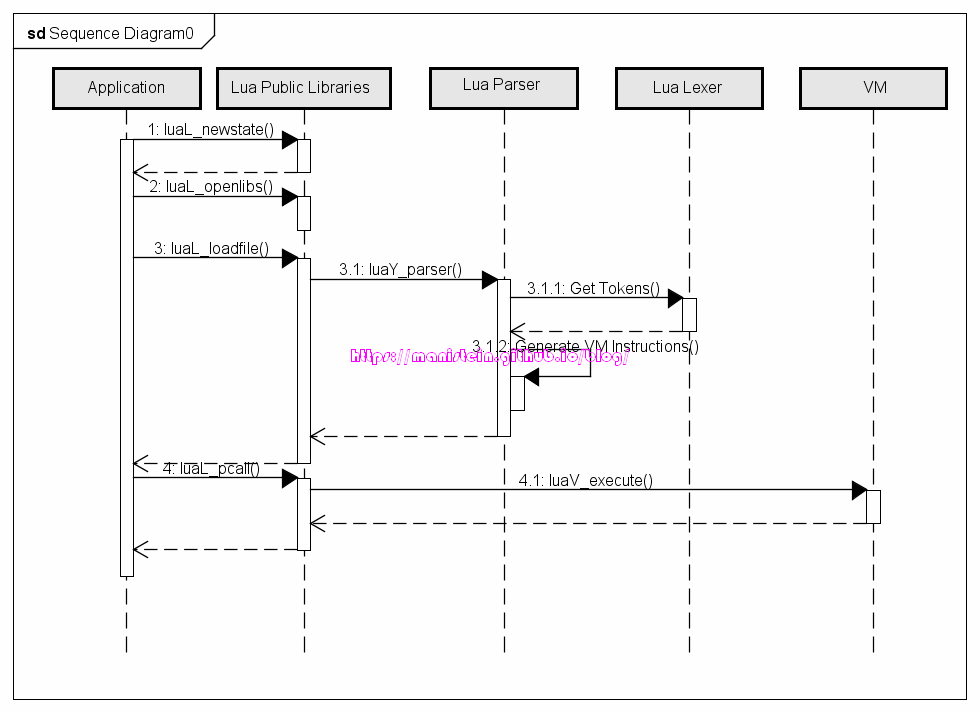
上图所示的4个函数，分别与图2中的代码调用一一对应，我们的目标则是从这几个接口出发，逐步深入开发其内部涉及到的步骤和模块，以最终达到我们在上一小节中定下的目标。后面的小节我们将逐步实现相关的内容。
Bytecode分析工具
分析和研究lua解释器，个人认为最有效的方式则是从虚拟机的运作方式开始研究，然后再深入编译器部分，实际上网络上很多资料都是从研究lua虚拟机开始的，而要很好的研究lua虚拟机的运作方式，我们首先要知道lua源码经过编译后，它将以什么样的方式呈现。lua源码，在经过lua编译器编译以后，会生成所谓的bytecode，而这个bytecode会在lua虚拟机里运行，把它们的组织方式展现出来，并加以研究，能够极大促进我们对虚拟机的理解。到目前为止，我还没介绍到底什么是bytecode，按照Wikipedia Bytecode词条[2]的解释，它是经过编译器生成的一种供解释器运行的编码，其本质就是一种中间表示(Intermediate Representation)
Bytecode, also termed portable code or p-code, is a form of instruction set designed for efficient execution by a software interpreter. Unlike human-readable source code, bytecodes are compact numeric codes, constants, and references (normally numeric addresses) that encode the result of compiler parsing and performing semantic analysis of things like type, scope, and nesting depths of program objects.
Wikipedia的词条，对bytecode的起源，更是加以清晰的解释，这使我们对bytecode的理解则更加清晰
The name bytecode stems from instruction sets that have one-byte opcodes followed by optional parameters. Intermediate representations such as bytecode may be output by programming language implementations to ease interpretation, or it may be used to reduce hardware and operating system dependence by allowing the same code to run cross-platform, on different devices. Bytecode may often be either directly executed on a virtual machine (a p-code machine i.e., interpreter), or it may be further compiled into machine code for better performance.
词条上表示，bytecode起源于指令集(Instruction Sets)的编码方式，即一个表示指令操作的opcode，和一些可被选择的操作数，编码到一个定长的字节序中。它出现的目的是为了减少被编译的程序，对机器的依赖，从而实现跨平台运行。由此，我们可以理解为，所谓的bytecode就是能够被虚拟机的解释器识别并运行的指令。
事实上，官方有提供一个独立的lua编译器，它就是luac，这个编译器能够将lua源码编译后，将bytecode保存为一个二进制文件，这个文件可以在我们需要的时候，直接提供给解释器加载运行。这种方式能够节约我们编译的时间，但是不能够提升我们运行时的效率，因为lua在直接加载脚本并运行的模式中，也是先将lua脚本编译成bytecode，再交给虚拟机去运行[3]。luac也提供了对二进制文件反编译的功能，它能够还原lua脚本在内存中的结构，例如我们有一个test脚本，位于luac的上级目录，那么要对它进行编译，然后再反编译的指令则如下所示：1
./luac -l -l -v ../test.lua
test.lua的代码是：1
print("hello world")
那么最终输出的结果则是：1
2
3
4
5
6
7
8
9
10
11
12
13
14Lua 5.3.4 Copyright (C) 1994-2017 Lua.org, PUC-Rio
main <../test.lua:0,0> (4 instructions at 0xe35e30)
0+ params, 2 slots, 1 upvalue, 0 locals, 2 constants, 0 functions
1 [1] GETTABUP 0 0 -1 ; _ENV "print"
2 [1] LOADK 1 -2 ; "hello world"
3 [1] CALL 0 2 1
4 [1] RETURN 0 1
constants (2) for 0xe35e30:
1 "print"
2 "hello world"
locals (0) for 0xe35e30:
upvalues (1) for 0xe35e30:
0 _ENV 1 0
虽然官方已经提供了反编译的工具，但是排版比较乱，同时我们也希望能够让输出的指令自动加上注释，方便我们阅读和分析，尤其是应对比较复杂的脚本的情况下。为此，我专门写了一个工具，这个工具能够将官方lua的代码，直接转换成易于我们查看的方式，展示对应lua脚本代码经过编译以后的虚拟机指令，也就是对luac编译好的二进制流进行反编译。读者可以从这个地址里下载到该工具。这个工具是模仿ChunkSpy的反编译工具，不过与ChunkSpy不同的是，它支持的版本是lua5.1，而我写的protodump支持的版本是lua5.3。目前只有linux上的版本，暂时不考虑出windows的版本。
使用它的方式也非常简单，在下载工具以后，进入工具的目录，你可以输入如下命令，先去编译lua源码，然后再去生成反编译的结果：1
2
3
4
5
6-- 如果你是首次使用这个工具，那么需要先编译lua源码，生成lua和luac这两个可执行文件
-- 如果在protodump目录下已经有这两个文件，那么不需要每次使用都重新编译
./build.sh
-- 将lua源码dump成易于分析的信息
./dump.sh path_to_script
其中path_to_script则是你要进行分析的脚本路径，现在假设，我们有一个test.lua脚本，在protodump工具的上层目录，其代码如图7所示：1
2-- test.lua
print("hello world")
图7
那么我们输入./dump.sh ../test.lua命令，会在protodump目录里生成一个lua.dump文件，打开它，我们可以看到脚本对应的虚拟指令信息：1
2
3
4
5
6
7
8
9
10
11
12
13
14
15
16
17
18
19
20
21
22
23
24
25
261 lua.dump
file_name = ../test.lua.out
+proto+maxstacksize [2]
| +k+1 [print]
| | +2 [hello world]
| +locvars
| +lineinfo+1 [1]
| | +2 [1]
| | +3 [1]
| | +4 [1]
| +p
| +numparams [0]
| +upvalues+1+idx [0]
| | +instack [1]
| | +name [_ENV]
| +source [@../test.lua]
| +is_vararg [1]
| +linedefine [0]
| +code+1 [iABC:OP_GETTABUP A:0 B :0 C:256 ; R(A) := UpValue[B][RK(C)]]
| | +2 [iABx:OP_LOADK A:1 Bx :1 ; R(A) := Kst(Bx)]
| | +3 [iABC:OP_CALL A:0 B :2 C:1 ; R(A), ... ,R(A+C-2) := R(A)(R(A+1), ... ,R(A+B-1))]
| | +4 [iABC:OP_RETURN A:0 B :1 ; return R(A), ... ,R(A+B-2) (see note)]
| +type_name [Proto]
| +lastlinedefine [0]
+upvals+1+name [_ENV]
+type_name [LClosure]
图8展示了该脚本编译以后的信息，code列表展示的则是它将在虚拟机里运行的指令，’;‘后是自动生成的与指令相关的注释，这也算是对ChunkSpy的一种改进吧:)。接下来，我将对上面的结构作简要说的说明，以方便大家更好的使用这个工具。
图8展示的是一种被我们称之为LClosure的结构，他实际上是一个function类型，是lua脚本在编译时，解释器为其创建的一个用于容纳编译结果的一个数据结构，它包含一个Proto类型的实例，和一个upvalue列表，现在将对其内容进行解释和说明：
- proto：我们的proto结构，对应的是一个function，每个function都包含一个proto结构的实例，proto结构包含了函数要用到的常量表，local变量表，指令信息，调试信息等。对于一个lua脚本而言，脚本本身就是一个top level function，因此一个脚本被编译以后，也会有一个对应的proto结构实例。
- maxstacksize：proto所对应的函数的栈的大小。
- k：存放脚本里的常量，所有的常量都会被放入这个脚本，它虽然是一个列表，更是一个常量集合，多个值相同的常量，只会在列表里出现一次。
- localvars：函数的local变量表，包含的信息包括local变量的名称和位置。
- lineinfo：列表下标表示的是code列表里的那个指令，中括号里的数字表示该指令所对应的源码的line number。
- p：在一个函数内部定义的函数的结构列表，其本质就是一个proto结构列表
- numparams：函数的参数个数
- upvalues：这个列表里存放的不是upvalue实例，而是记录upvalue的信息，也用于调试时使用，instack表示其是在lua栈上，还是在function的upvalue实例列表里。
- source：只有top level function里的source才有具体的值，也就是lua脚本的路径和名称。
- is_vararg：表示是否是可变参函数，1表示是，0表示不是。
- code：bytecode列表，包含虚拟机可以运行的指令列表。
- type_name：类型名称
- upvals：包含的是真实的upval实例的列表。
- type_name：表示这个结构是一个LClosure类型的实例。
上面对protodump工具生成的结果，进行了解释和说明，它有助于我们分析官方lua源码的编译结果，对于研究lua的编译器部分，有极大的帮助。
虚拟机基础设计与实现
接下来，我们就要开始构建dummylua的虚拟机基础架构了，事实上，我在第一篇【构建Lua解释器Part1：虚拟机的基础–Lua基本数据结构、栈和基于栈的C函数调用的设计与实现】就已经设计和定义了虚拟机要用到的基本数据结构，以及其基本运作机制了，但是这篇涉及的主要是light c function在lua栈中的调用流程，本篇我们将把lua脚本的执行，也纳入到原有的机制上，如果你对那篇文章已经生疏，或者完全没有看过它，我建议先回顾一下这篇文章，这样有利于读者理解接下来的内容。
要理解lua虚拟机的运作流程，首先要理解它的指令编码方式和指令集，然后深入研究支撑其运作的基本数据结构，最后通过阐述其运作机制，最终将整个运作机制清晰地串通起来。我们还会在后面展示实现这套机制的关键代码，并加以说明。
Lua的指令编码方式
lua所有的指令都会编码到一个32位的字节序中，也就是说lua所有的虚拟机指令都是32位的，其编码方式一共有3种方式，iABC、iABx、iAsBx三种，它们的格式定义如下所示：1
2
3
4
5
6
7+--------+---------+---------+--------+--------+
| iABC | B:9 | C:9 | A:8 |Opcode:6|
+--------+---------+---------+--------+--------+
| iABx | Bx:18(unsigned) | A:8 |Opcode:6|
+--------+---------+---------+--------+--------+
| iAsBx | sBx:18(signed) | A:8 |Opcode:6|
+--------+---------+---------+--------+--------+
上面展示了三种模式的编码，在lua中，以iABC模式进行编码的指令，占据了绝大多数。这里对不同的部分进行解释和说明，首先Opcode表示操作指令，它占据6个bit位，剩下的则表示参数信息；A表示函数栈中，哪个位置将作为RA寄存器，它占据8个bit位，这个RA寄存器一般是操作的目标所在，任何模式的指令都需要对RA寄存器进行操作，而在lua虚拟机中，所有的寄存器都是以栈上的某个域来充当的，并不像我们的计算机硬件那样，有专门的寄存器独立于栈之外。
除了sBx，其他所有的域都是无符号整数表示，而且sBx域，也不是采用二进制补码的方式进行编码，它采用了一个basis值作为0值，这个basis值是Bx的最大值除以2得到，即262143 >> 1，也就是131071。如果sBx表示-1时，那么它的值则是-1 + 131071 = 131070 = 0x1FFFE[4]，也就是说0表示sBx的最小值-131071，0x3FFFF表示sBx的最大值131072。
正如前面所说的那样，我们绝大多数虚拟机指令是iABC模式，采用iABx模式的指令主要有OP_LOADK和OP_CLOSURE，OP_LOADK之所以要采用iABx指令，是因为其参数常量列表的下标，如果它采用iABC模式，那么有9个bit会被浪费掉，而仅仅依靠9个bit，最多只能支持到512个常量，这是远远不够的。而OP_CLOSURE的参数是从Proto列表里，找到与之关联的proto实例，我们同样不可能只限制我们的脚本里只能定义最多不超过512个函数，因此它也是iABx模式。采用iAsBx模式的指令，大多数是需要跳转的指令，比如jump、判断和循环相关的指令。如果读者对目前涉及到的一些内容感到困惑，并不要紧，本篇后续内容以及后续章节，我会慢慢丰富这些内容。
Lua5.3中的指令集
接下来我将展示lua5.3的指令集合，dummylua的目标，是最终实现这些指令：1
2
3
4
5
6
7
8
9
10
11
12
13
14
15
16
17
18
19
20
21
22
23
24
25
26
27
28
29
30
31
32
33
34
35
36
37
38
39
40
41
42
43
44
45
46
47
48
49
50
51
52
53
54
55
56
57
58
59
60
61
62
63
64
65
66-------------------------------------------------------------------------
-- name mode description
------------------------------------------------------------------------
OP_MOVE A B R(A) := R(B)
OP_LOADK A Bx R(A) := Kst(Bx)
OP_LOADKX A R(A) := Kst(extra arg)
OP_LOADBOOL A B C R(A) := (Bool)B; if (C) pc++
OP_LOADNIL A B R(A), R(A+1), ..., R(A+B) := nil
OP_GETUPVAL A B R(A) := UpValue[B]
OP_GETTABUP A B C R(A) := UpValue[B][RK(C)]
OP_GETTABLE A B C R(A) := R(B)[RK(C)]
OP_SETTABUP A B C UpValue[A][RK(B)] := RK(C)
OP_SETUPVAL A B UpValue[B] := R(A)
OP_SETTABLE A B C R(A)[RK(B)] := RK(C)
OP_NEWTABLE A B C R(A) := {} (size = B,C)
OP_SELF A B C R(A+1) := R(B); R(A) := R(B)[RK(C)]
OP_ADD A B C R(A) := RK(B) + RK(C)
OP_SUB A B C R(A) := RK(B) - RK(C)
OP_MUL A B C R(A) := RK(B) * RK(C)
OP_MOD A B C R(A) := RK(B) % RK(C)
OP_POW A B C R(A) := RK(B) ^ RK(C)
OP_DIV A B C R(A) := RK(B) / RK(C)
OP_IDIV A B C R(A) := RK(B) // RK(C)
OP_BAND A B C R(A) := RK(B) & RK(C)
OP_BOR A B C R(A) := RK(B) | RK(C)
OP_BXOR A B C R(A) := RK(B) ~ RK(C)
OP_SHL A B C R(A) := RK(B) << RK(C)
OP_SHR A B C R(A) := RK(B) >> RK(C)
OP_UNM A B R(A) := -R(B)
OP_BNOT A B R(A) := ~R(B)
OP_NOT A B R(A) := not R(B)
OP_LEN A B R(A) := length of R(B)
OP_CONCAT A B C R(A) := R(B).. ... ..R(C)
OP_JMP A sBx pc+=sBx; if (A) close all upvalues >= R(A - 1)
OP_EQ A B C if ((RK(B) == RK(C)) ~= A) then pc++
OP_LT A B C if ((RK(B) < RK(C)) ~= A) then pc++
OP_LE A B C if ((RK(B) <= RK(C)) ~= A) then pc++
OP_TEST A C if not (R(A) <=> C) then pc++
OP_TESTSET A B C if (R(B) <=> C) then R(A) := R(B) else pc++
OP_CALL A B C R(A), ... ,R(A+C-2) := R(A)(R(A+1), ... ,R(A+B-1))
OP_TAILCALL A B C return R(A)(R(A+1), ... ,R(A+B-1))
OP_RETURN A B return R(A), ... ,R(A+B-2) (see note)
OP_FORLOOP A sBx R(A)+=R(A+2);
if R(A) <= R(A+1) then { pc+=sBx; R(A+3)=R(A) }
OP_FORPREP A sBx R(A)-=R(A+2); pc+=sBx
OP_TFORCALL A C R(A+3), ... ,R(A+2+C) := R(A)(R(A+1), R(A+2));
OP_TFORLOOP A sBx if R(A+1) ~= nil then { R(A)=R(A+1); pc += sBx }
OP_SETLIST A B C R(A)[(C-1)*FPF+i] := R(A+i), 1 <= i <= B
OP_CLOSURE A Bx R(A) := closure(KPROTO[Bx])
OP_VARARG A B R(A), R(A+1), ..., R(A+B-2) = vararg
OP_EXTRAARG Ax extra (larger) argument for previous opcode
上述列表，展示了lua-5.3.5的指令集，name这一列展示了OPCODE的名称，中间的mode这一列则展示了它的模式，而右边的description则对该指令的操作进行了解释和说明。这里将对里面的一些特殊的符号和参数进行说明，首先需要说明的是，上面的A、B、C、Bx以及sBx都是指令里指定域的值，下面对特殊的符号和函数进行说明：
- R( A ):寄存器A，一般是操作目标，由指令中的A域的值，指定该寄存器在栈中的位置
- R( B ):寄存器B，一般是操作数，由指令(iABC模式)中的B域的值，指定该寄存器在栈中的位置
- R( C ):寄存器C，一般是操作数，由指令(iABC模式)中的C域的值，指定该寄存器在栈中的位置
- PC:PC寄存器，指向当前执行指令的地址
- Kst(n):从常量表中取出第n个值
- Upvalues[n]:从upvalue实例列表中，取出第n个upvalue实例
- Gbl[sym]:sym表示一个符号(数值、地址或字符串等)，从全局表中，取出key为该符号的值
- RK( B ):当B的值>=256时，从常量表中取出Kst(B-256)的值，当B<256时，RK(B):=R(B)
- RK( C ):同RK(B)，只是将B值替换为C值
- sBx:有符号值，它表示所有jump指令的相对位置
到目前位置，我介绍了lua虚拟机的整个虚拟指令集，以及对描述其功能的符号和函数进行了简要的解释和说明，从本章节开始，我会陆续详细介绍章节内容涉及到的指令。
本章涉及到的指令
回顾一下本文开篇的目标，我们的目标是编译并且运行一个只包含”print(‘hello world’)“代码语句的lua脚本，而在前面的章节中，我已经将这段代码的内存表示dump出来了，它即是图8展示的信息。我们可以关注到图8中的code列表，它所包含的指令，正是本章节需要深入研究的指令，接下来我将一一对他们进行说明。
- OP_GETTABUP R(A) := UpValue[B][RK( C )]
B表示UpValue列表中的索引，从UpValue列表中获取UpValue[B]的值，这个值必须是一个table类型的变量，并且从这个table中，找到key值为RK( C )的value，并赋值到R(A)中。 - OP_LOADK R(A) := Kst(Bx)
Bx表示一个无符号整数值，从常量表中，获取index为Bx的常量，并赋值到R(A)中。 - OP_CALL R(A), … ,R(A+C-2) := R(A)(R(A+1), … ,R(A+B-1))
这个是调用函数的指令，R(A)表示要被调用的函数，B表示该函数的参数个数，当B>=1的时候，表示该函数R(A)有B-1个参数(R(A+1)~R(A+B-1))，当B为0时，表示从R(A+1)到栈顶都是该函数的参数。C代表该函数R(A)调用后的返回值个数，当C>=1时，则表示该函数有C-1个返回值(R(A)~R(A+C-2))，当C为0时，表示函数调用完以后，从R(A)到栈顶都是其返回值。 - OP_RETURN return R(A), … ,R(A+B-2)
每个函数的最后一个指令，就是return指令，该指令主要处理被调用函数的返回值，并且将其安排到栈上合适的位置，该处理与light c function的返回值处理方式类似，R(A)是第一个返回值存放的位置，B的值需要加以特殊说明，当B>=1时，表示函数的返回值是B-1个(R(A)~R(A+B-2))，当B的值为0时，表示其返回值是不定的，从R(A)到栈顶。读到这里，可能读者会有疑惑，既然OP_CALL指令已经指明了返回值，那么OP_RETURN为什么还要去重新指明一次呢？这是因为OP_RETURN是针对被调用函数(callee)做的处理，而OP_CALL指令，则是对调用者(caller)做的处理。运行脚本所需的基本数据结构
在开始介绍虚拟机运行脚本最基础的架构之前，这里需要先介绍几个非常重要的概念和流程。首先我要介绍的是chunk的概念，实际上，官方对chunk的解释是，它是一段能够被lua解释器编译运行的代码，它可以是一个lua脚本文件，或者是在交互模式中，输入的包含一段代码的字符串[5]，我们在图7展示了一段，包含在test.lua里的代码，而这个test.lua里的全部内容，就可以被视作是一个chunk。lua解释器，首先要将文件中的代码读出来，然后将它编译，然后再进行运行。我们的lua脚本源码就是包含在这些chunk中。对chunk进行处理，就是lua解释器运行脚本的起点。不过，在对chunk进行编译之前，首先lua解释器要做的是创建一个LClosure类型的变量，并压入栈顶，如图9所示：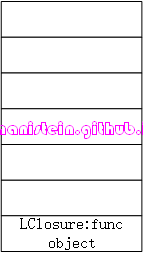
LClosure对象，按中文的翻译来说，它就是闭包对象，实质上也是一个函数对象，我们在执行图2的代码时，调用luaL_loadfile函数，首先要做的事情就是创建这个LClosure类型的数据实例，并压入栈顶。有了这个数据实例，解释器接下来就将脚本的文件流读出，也就是我们所说的chunk，然后将其编译，并将编译结果存入LClosure结构实例中的Proto类型的变量中。前面我们也提过，这个Proto结构，就是用来保存编译结果的，后续的虚拟机运行，就是通过读取存在Proto结构里的虚拟机指令来运作。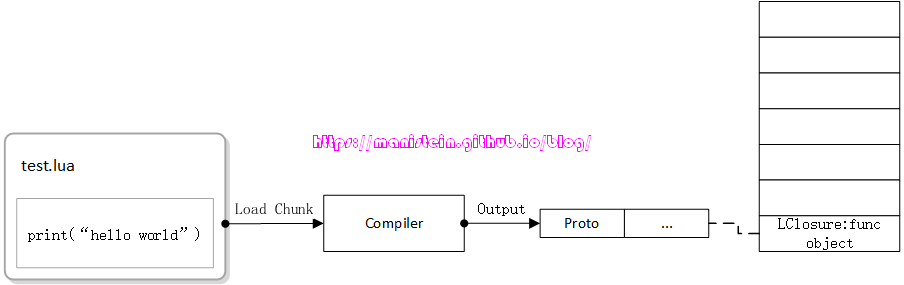
在完成加载和编译以后，就可以调用如图2中的luaL_pcall函数来运行刚刚编译好的虚拟机指令了。
通过上文的论述，我们可以感知到LCLosure结构是需要我们重点研究的数据结构，下面我展示了该结构的代码：1
2
3
4
5
6
7
8
9// common/luaobject.h
// Closure
typedef struct LClosure {
ClosureHeader;
Proto* p;
UpVal* upvals[1];
} LClosure;
从上面的代码，我们可以得知，它是一种受gc管控的类型，除去和gc有关的部分(有关gc的内容，可以回顾一下Part2)，LClosure主要包含一个Proto类型的结构，以及一个Upvalue列表，目前我并不打算深入研究Upvalue的机制，现在只需要知道的是，每个Closure的第一个upvalue是一个名为_ENV的变量，它默认指向我们的全局表_G，因此访问_ENV实质上就是访问_G，当然lua也支持我们自定义赋什么值给_ENV。
接下来，让我们看一下Proto这个数据结构：1
2
3
4
5
6
7
8
9
10
11
12
13
14
15
16
17
18
19
20
21
22
23// common/luaobject.h
typedef struct Proto {
CommonHeader;
int is_vararg; /* 表示该LClosure对象的参数，是动态传入的，还是一个指定参数列表的函数，当它的值为1
时表示参数是动态传入，为0时表示不是*/
int nparam; /* 当is_vararg为0时生效，它表示该函数参数的数量*/
Instruction* code; /* Instruction结构，其实是一个typedef的数据类型，它本质是一个int型变量的列表，
Instruction表示的就是虚拟机的指令，这是函数的指令列表*/
int sizecode; /* 指明code列表的大小*/
TValue* k; /* 常量列表*/
int sizek; /* 常量列表的大小*/
LocVar* locvars; /* local变量列表，主要包含的信息包括，local变量的名称，以及它是第几个local变量
local变量是存在栈中的*/
int sizelocvar; /* local变量列表的大小*/
Upvaldesc* upvalues;/* upvalue信息列表，主要记录upvalue的名称，以及其所在的位置，并不是upvalue实际
值的列表*/
int sizeupvalues; /* upvalue列表大小*/
struct Proto** p; /* 在内部定义的函数，编译后会生成一个个proto实例，存放在这个列表中*/
int sizep; /* proto列表的长度*/
TString* source; /* 记录的是脚本的路径*/
struct GCObject* gclist;
int maxstacksize; /* 栈的最大大小*/
} Proto;
除了gc相关的变量，其他所有的变量我都在上面的注释里说明了，这里对一些特别的点进行一下说明：
1) Instruction类型，其本质就是int类型，是经过typedef修饰的类型，int是4个字节的，32bit位，它实际代表的就是虚拟机的指令。
2) k列表是存放脚本常量的列表，什么是常量，即boolean型变量、数值型变量和字符串等。
3) proto列表p，它所容纳的是一个函数内部定义的函数的编译结果，比如test.lua脚本的代码如下所示1
2
3
4
5
6
7
8-- test.lua
function foo()
-- Do Something
end
function bar()
-- Do Something
end
那么我们第一个创建出来的LClosure实例，的Proto变量，存储的就是test.lua内部编译的结果，而foo和bar函数，在完成编译后，就存放在了列表p里，此时并不会立即为他们创建LClosure实例，而是在调用到这些函数时创建，并与对应的Proto实例关联。
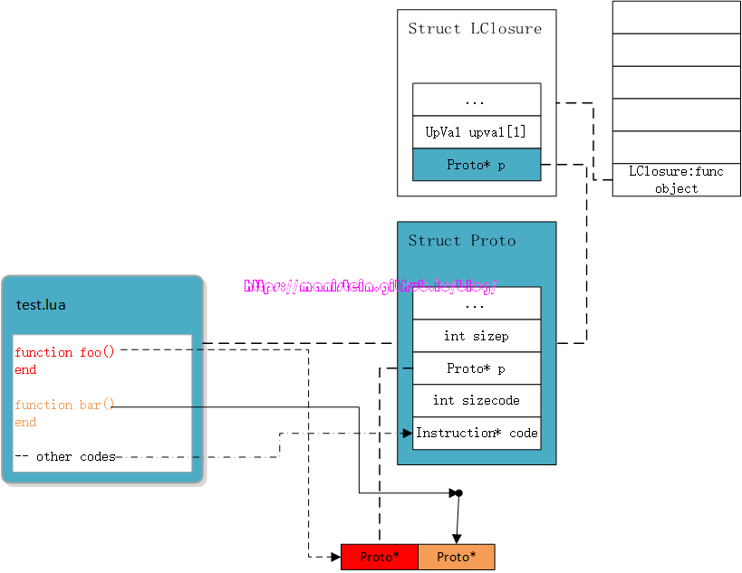
图11说明整个test.lua脚本的编译结果都存储在LClosure实例的Proto结构里，test.lua本身就是被当作一个函数来对待，它是一个被称之为top level function的函数。图中的两个函数，foo和bar，以及其内部定义的逻辑，都被编译到了该Proto实例里的proto列表里，而test.lua的非函数定义的其他逻辑，other code则经过编译变成了一个虚拟机指令集序列，被存放在Proto结构的code列表中，同样的，foo和bar函数内部的指令，则存放在它们所指向的proto结构的code列表里。
4) 关于upvalue，proto中的upvalue并不是存放真实的UpVal实例，而是存放的与之关联的信息。
到目前为止，我已经完成了LClosure结构的介绍和说明，实际上，lua中，函数的类型共有3种，第一种就是在part1详细论述的light c function，第二种就是刚刚论述完的LClosure，还有一种就是CClosure。Closure是闭包的意思，LClosure就是lua闭包，而CClosure则是C的闭包，下面我们来看一下它的数据结构：
// luaobject.h
typedef struct CClosure {
ClosureHeader;
lua_CFunction f;
UpVal* upvals[1];
} CClosure;
我们可以看到，它也是一个受gc管理的类型，和LClosure不同的是，除去gc相关的部分，它只包含一个函数指针类型的变量lua_CFunction和一个upvalue列表。这种类型主要在我们注册标准库的时候用到，也就是在调用图2的luaL_openlibs函数的时候，被我们注册的标准库函数的类型，对他的调用方式与light c function并没有什么特别的地方，特别的地方主要在于它受gc管理，并且含有upvalue。
虚拟机运行的基本流程
我们已经知道了，在执行图2所示的代码中的luaL_loafile函数以后，我们先后创建了一个LClosure实例并放入栈顶，然后将test.lua脚本的代码编译好以后，并将其存入LClosure结构的Proto变量中以后，我们就可以调用luaL_pcall函数去执行这个编译好的结果了，现在我将正式进入到阐述lua虚拟机运转机制的阶段。首先，我们得展示一下，在执行完luaL_loadfile函数以后，我们虚拟机中的内存布局是怎样的：
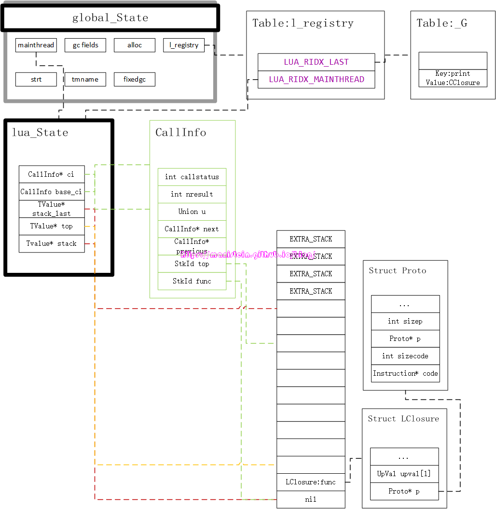
通过上图，我们可以看到，脚本已经被编译好，并存入LClosure实例的Proto结构里了，当我们继续调用图2代码里的luaL_pcall的时候，我们会创建一个新的CallInfo实例，这个实例会为我们调用栈顶的LClosure实例设定好栈的范围，并指定其调用者是谁等信息，在调用luaL_pcall函数以后，我们就得到了图13的结构：
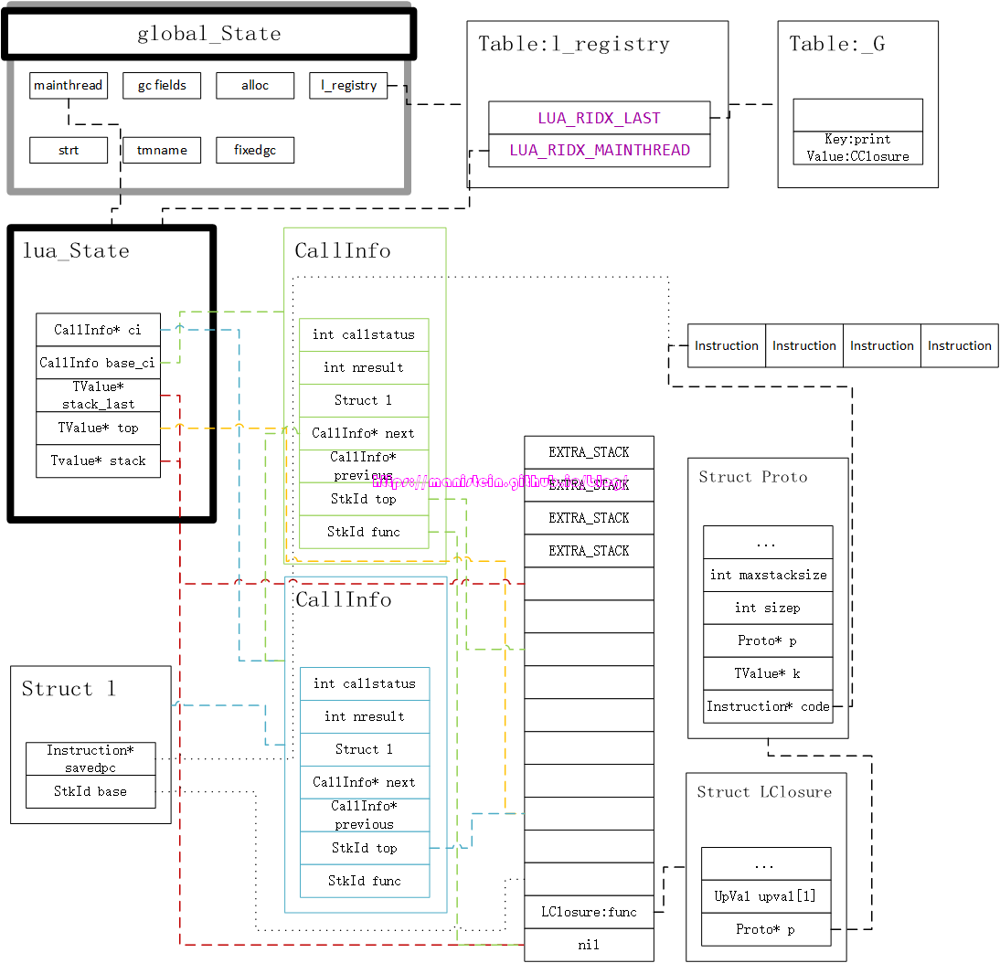
对于上面展示出来的信息，我们有几点需要注意，首先要注意的一点则是我们的CallInfo结构新增了一个结构体l，这个结构体专门用于处理lua函数调用的情况，目前dummylua中，它一共有两个变量，一个是base指针，这个base指针指向了函数体LClosure实例的下一个栈位置，他的作用是用于指定被调用函数的栈底在哪里。另外savedpc指针。则指向了Proto结构的code列表，此外我们的top指针则根据maxstackszie的大小调整了它的位置，因为我们的指令集指令中，几乎很少直接调用需要对栈push和pop的操作，取而代之的，更多的是set操作，因此把top指针一开始就设置在maxstacksize之外是个不错的选择。
以上是调用LClosure函数，也就是一个lua函数前的准备工作，那么在开始执行这个函数时，lua虚拟机会从最新的CallInfo实例中(也就是指向LClosure实例的CallInfo实例)的l.savepc中取出最新要执行的指令，然后l.savedpc指针会自增，接下来就执行这个指令，其伪代码如下所示：
1 | Instruction i = L->ci->l.savedpc; |
我们可以看到，其实虚拟机运行指令的机制其实非常简单，其实就是一个switch语句，判定当前指令是哪个指令，最后执行这个指令。当然我们这里省去了一些前置操作，实际上来说，我们将Proto结构里的code列表里的指令，从头到尾执行一次的过程，被称作是一个frame，每次调用一个新的lua函数，就是进入到了一个新的frame。
现在我们结合图1和图2的代码，也就是本章节的示例程序，来对虚拟机的运作流程进行解释和说明。图8是我们的print(“hello world”)脚本经过编译以后的内存组织形式，图14展示了在调用luaL_loadfile函数以后的内存布局：
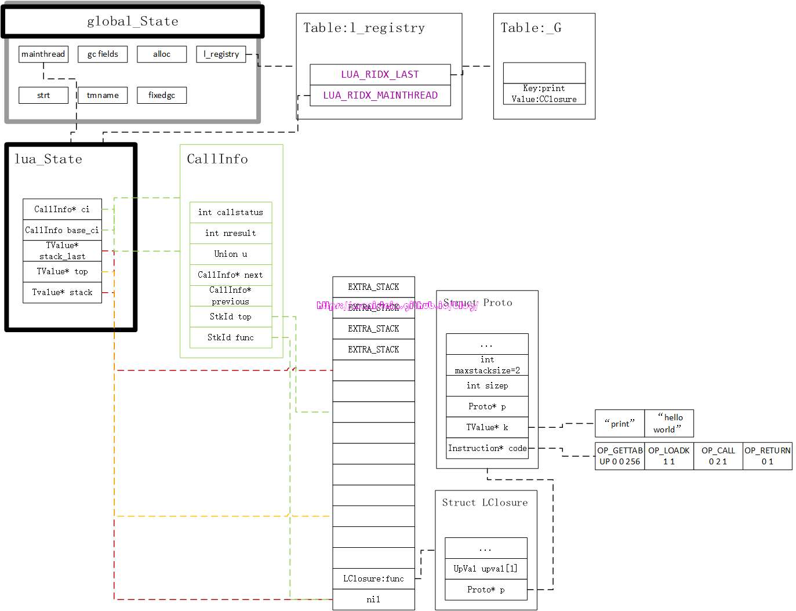
上图将我们要使用到的结构均以图像的形式展现出来了，关于编译的流程，我会在后面的章节里展示，不过现在主要是集中精力来探讨lua虚拟机的运作流程。在完成load file的操作以后，接下来就是要进行函数调用了，也就是执行我们的luaL_pcall函数。当我们被调用的函数是一个LClosure类型的函数时，luaL_pcall会执行两个步骤，第一个步骤则是创建一个CallInfo实例，并且做好运行虚拟指令的准备工作，这时并没有立刻执行指令，如图15所示：
我们可以看到，这个准备工作，主要做了几件事情，首先是将lua_State中，指向当前CallInfo的指针ci，指向了新创建的CallInfo实例，这个指针指向谁，就代表当前调用执行的是哪个函数，然后是设置了ci->l.base的位置，这个位置代表当前被调用函数的栈底，然后设置ci->l.savedpc指针到Proto内部的指令列表首部，同时还设置了ci->top指针和L->top指针，他们被设置到相同的位置上，设置他们的是由Proto结构中，maxstacksize的大小决定。同时我们也可以观察到，图1脚本代码的print和hello world都被当做是常量，存储到了常量表k中，这些常量将会在后续执行过程中被用到。
完成了准备工作以后，就进入到了执行虚拟机指令的运行阶段了，我们可以看到Proto结构的code列表中，已经列好了要被执行的指令，以及它们附带的参数，指令是以OP_作为前缀，后面的数字代表参数。第一个参数表示的是R(A)寄存器，也就是我们的操作目标。进入到运行流程以后，我们将从第一个指令开始执行。第一个指令是OP_GETTAPUP，它是iABC模式，而它的参数是0、0和256，也就是说R(A)的位置在ci->l.base + 0的位置上，后面的两个值分别是B值和C值。OP_GETTABUP的操作是，从LCLosure的UpVal列表中，取出UpVal[B]的值，然后以RK( C )的值作为key，从UpVal[B]中取出value，放到R(A)中。我们可以看到在这个脚本里，LClosure实例的UpVal列表只有一个值–_ENV，而这个_ENV则指向了全局表_G，也就是说UpVal[B]指向了全局表_G，因为C的值>=256，因此RK( C )将会去Proto的常量表中找对应的key，也就是说我们的R(A):=UpVal[B][RK( C )]实际上是R(A):=UpVal[B][Kst(C-256)]，最后推导得到:
1 | R(A):=UpVal[0][Kst(0)] |
“print”字符串，位于Proto常量表k中的第0个位置，因此Kst(0)就是指向“print”这个字符串，也就是说我们最终从全局表中，取出key为“print”的value，也就是一个CClosure函数对象到R(A)上，也就是ci->l.base指向的位置，于是我们得到图16的结果。
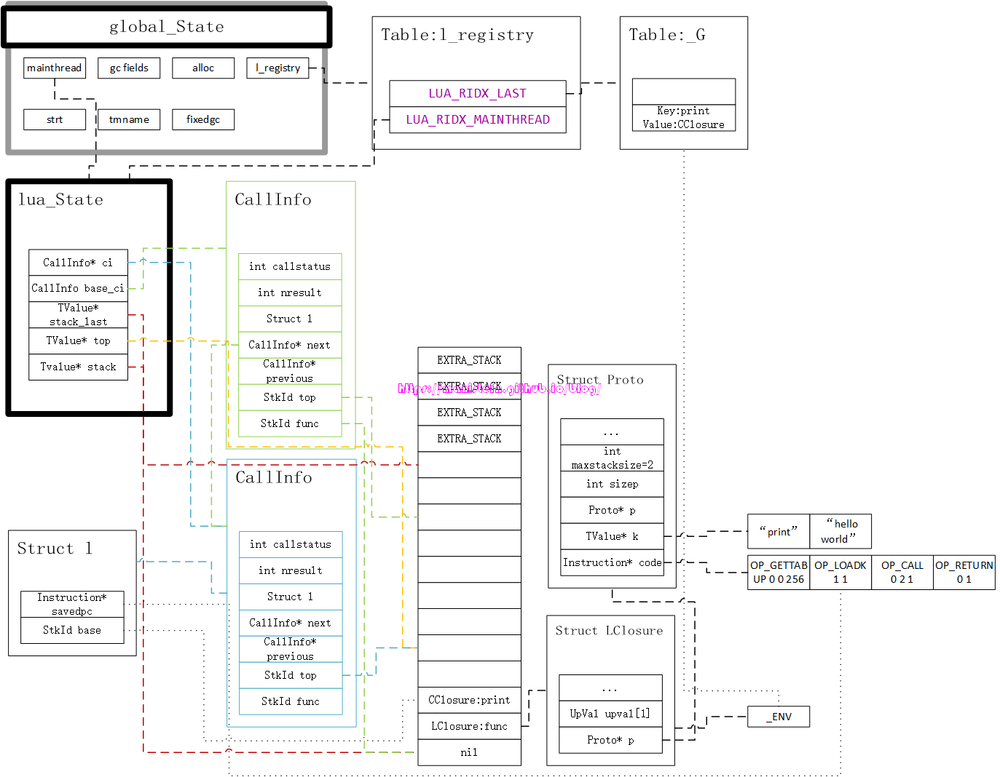
实际上，我们做的第一件事情，就是将全局表中的print函数放到寄存器R(A)上，以供我们等下调用，这里我们要注意到ci->l.savedpc指向的位置，向后偏移了一个位置，它指向的是下一个要被执行的命令。
接下来，虚拟机就会执行第二个指令，这个指令是OP_LOADK，它是iABx模式，因此它只有两个参数，第一个参数是A值，第二个参数是Bx，也就是说A=1且Bx=1。OP_LOADK的作用就是从常量表中，取出Kst(Bx)的值，赋值到R(A)上，即R(A):=Kst(Bx)，编译器已经帮我们选好了R(A)的位置了，因此这里我们只需要执行就好了。因为A的值是1，因此R(A)的位置是在ci->l.base + 1的位置之上，也就是print函数的上面那个位置，又因为Bx的值是1，因此Kst(Bx)就是Kst(1)，它对应常量表中的“hello world”字符串，于是我们得到下面的等式：
R(A):=Kst(Bx)
<===>
R(A):=Kst(1)
于是我们得到了图17的结果。
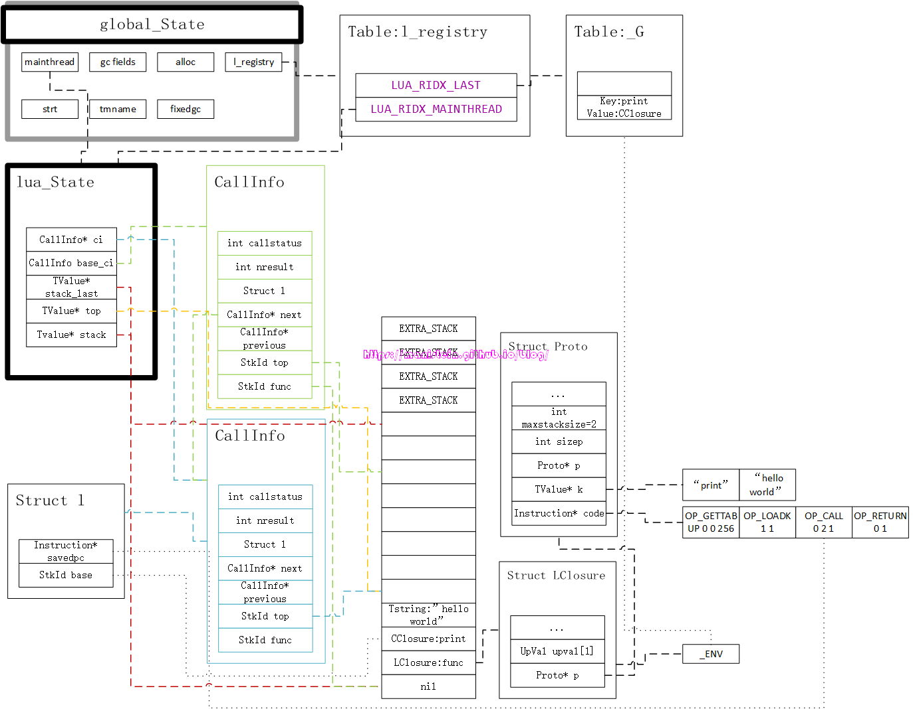
执行完第二个指令，我们发现ci->l.savedpc的指针又向右移动了一位，接下来则开始执行第三个指令OP_CALL。OP_CALL指令时iABC模式，因此A、B和C的值分别是0、2和1。OP_CALL指令的运作流程是，调用R(A)这个位置的函数，并且当B>=1时，将其上的B-1个栈变量作为参数传入，且传参顺序时由下往上；当B的值为0时，那么从R(A+1)到栈顶(L->top - 1)的变量都是其参数。同样，当C>=1时，则被调用函数(callee)返回C-1个返回值，当C为0时，意味着从R(A)到栈顶(L->top - 1)都是被调用函数的返回值。此时A为0，因此OP_CALL调用的是ci->l.base所指的函数，也就是我们的print函数，而B的值为2，表示其只有一个参数，就是print函数上方的”hello world”字符串，C的值为1，表示这个函数没有返回值。于是我们开始新的函数调用，同样的，此时会创建一个新的CallInfo实例，L->ci会指向这个新CallInfo实例，以表示它为当前调用的函数，于是我们得到了图18：
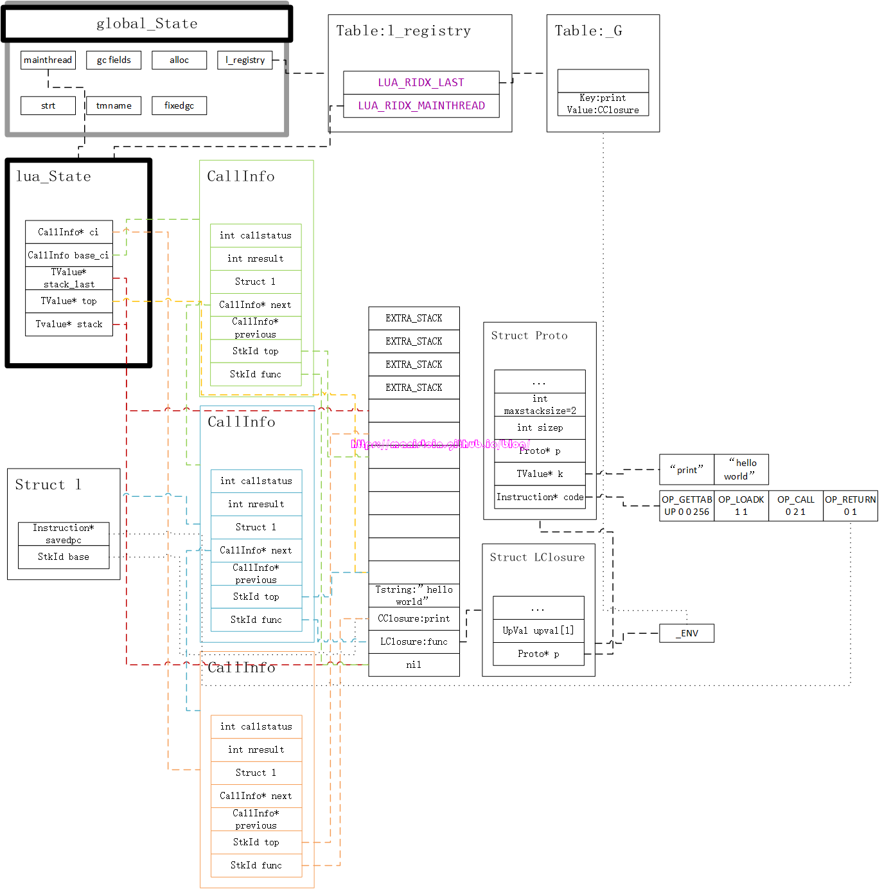
前面我介绍过CClosure结构的参数，调用它实际上是调用它身上存放的函数指针，而这个函数指针指向的是一个c函数，因此这里走进了c函数的调用流程，这里就不深入探讨该C函数的实现细节了，读者可以在common/luabase.c里找到它的实现逻辑，总而言之，他的作用就是在控制台打印一行“hello world”，然后完成print函数调用，在完成函数调用后，因为该函数没有返回值，因此print和hello world都会出栈，于是我们得到了图19：
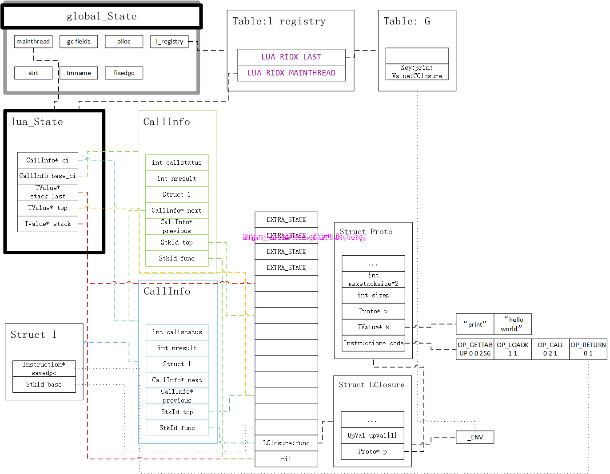
似乎和图17没有多大的差别，但是细心的你可能发现了ci->l.savedpc指针已经指向了最后一个指令了。
现在已经到了执行最后一个指令了，那便是OP_RETURN指令，这个指令几乎是所有lua函数的最后一个指令，每个lua函数在执行了这个指令之后，就需要对返回值进行处理，并且清除自己的栈，并且将控制权返回给caller。OP_RETURN函数是iABC模式，虽然用了这个模式，实际上C没有被用到，B表示它有几个返回值，当B>=1时，那么该函数有B-1个返回值，当B为0时，从函数所在的位置开始(ci->l->base - 1)，到栈顶都是返回值。实际上lua函数的返回值处理，和light c function基本上是差不多的。R(A)表示其第一个返回值所在的位置，由于B为1，因此它没有返回值，最终我们会把栈清空，将控制权返回给调用者，于是得到图20：
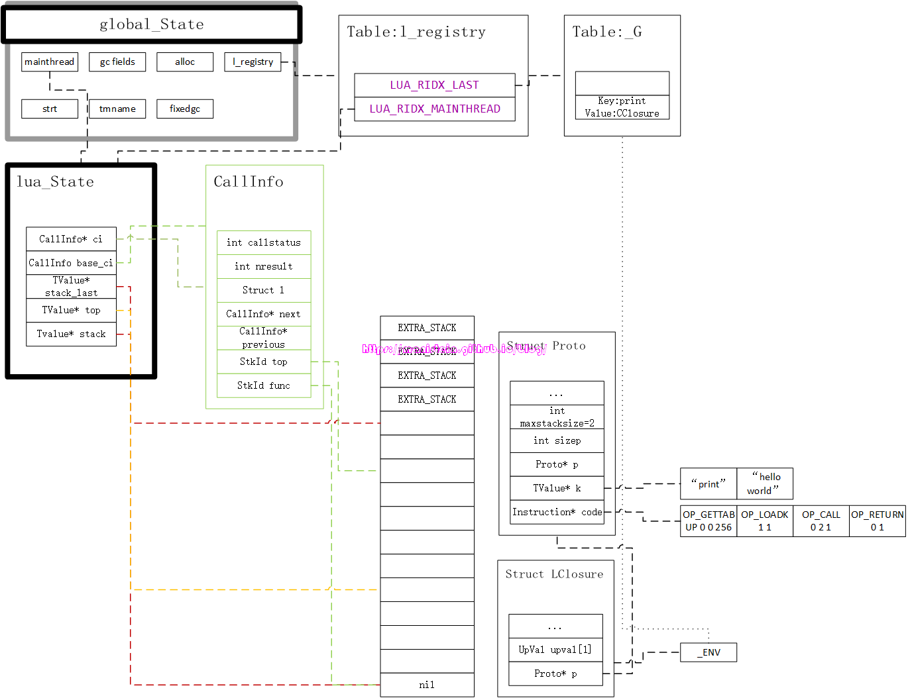
到了这里，实际上控制权已经返回给了图2代码中的main函数了，最后的结果时，我们得到如图21所示的输出。
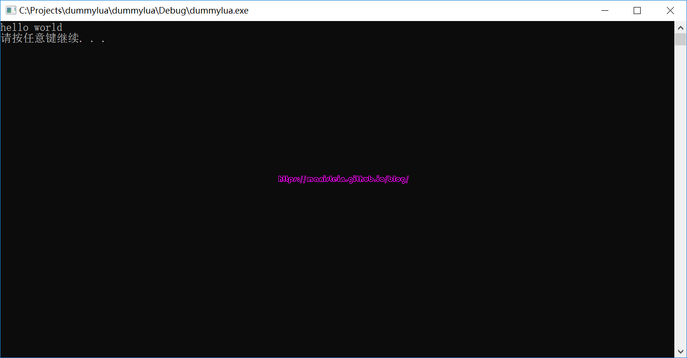
本小结，我花费了较大篇幅用于描述构建lua虚拟机所需要的基本数据结构，以及lua虚拟机的基本运转机制，相信读者对这个部分有了一个大致的理解，至于更多细节的东西，需要读者自己深入源码进行研究，本章节所涉及的脚本位于script/part05_test.lua脚本中，涉及的c代码入口在test/p5_test.c中，读者可以从c函数的入口开始，从luaL_pcall函数开始跟踪源码，相信阅读了本章，你对虚拟机的运作机制会更加清晰。
标准库加载机制
上一节，我们完成了Lua虚拟机的运作流程，它展示了从全局表中，调出print函数的流程，之前的部分默认这些全局的标准库函数，已经注册好了，并且之前的示意图也略有简化。实际上，在开始加载和运行脚本之前，我们需要先注册标准库，这个标准库注册流程就是我们现在需要讨论的内容。回顾一下图2中的代码，也就是贯穿本章节的示例代码，我们可以知道，标准库的注册逻辑就是在luaL_openlib函数内实现，现在我们来看一下这个函数的基本流程：1
2
3
4
5
6
7
8
9
10
11
12
13
14
15
16
17// luainit.c
const lua_Reg reg[] = {
{ "_G", luaB_openbase },
{ NULL, NULL },
};
void luaL_openlibs(struct lua_State* L) {
for (int i = 0; i < sizeof(reg) / sizeof(reg[0]); i++) {
lua_Reg r = reg[i];
if (r.name != NULL && r.func != NULL) {
luaL_requiref(L, r.name, r.func, 1);
}
}
}
上述的代码中，reg列表中罗列的项就是我们要注册的模块，以第一项为例，”_G”就是模块的key，而luaB_openbase就是模块初始化的函数，一般我们的模块的初始化函数，最终会注册好一个table，并压入栈中，最后注册到一个被称之为_LOADED的表中。每个模块会自己初始化好自己的table，一般而言就是注册一些函数和变量，一个模块一般情况下是对应一张表。
以luaB_openbase为例，这个函数将会在luaL_requiref内部表调用，在完成这个函数的调用以后，它会从l_registry中获取_G表，并且朝里面注册一些CClosure函数实例，也就是：1
2
3
4
5
6
7_G["print"] = cclosure // cclosure->func = lprint
_G["tostring"] = cclosure // cclosure->func = ltostring
```
也就是这个_G注册了两个cclosure实例。
最后将初始化好的模块(也就是那个代表模块的table实例)，注册到_LOADED table的函数也是luaL_requiref函数。以上面的例子作为演示，我们的luaB_openbase在完成初始化以后，luaL_requiref函数会将其注册到_LOADED表中，其结果如下所示：
```lua
_LOADED["_G"] = _G
实际上，luaL_requiref函数的第三个参数，会指定被传入的模块是否需要被加载到_G中，1表示需要，0表示不需要，这里我们传入了1，也就是说所有通过luaL_openlibs来注册的模块，全部会被加载到_G中，也就是说我们的_G也会被注册到_G里，于是有：1
2_G["_G"] = _G
_LOADED["_G"] = _G
也就是说_G._G的访问是合法的。在执行完上面的代码以后，我们可以得到如图21所示的结果：
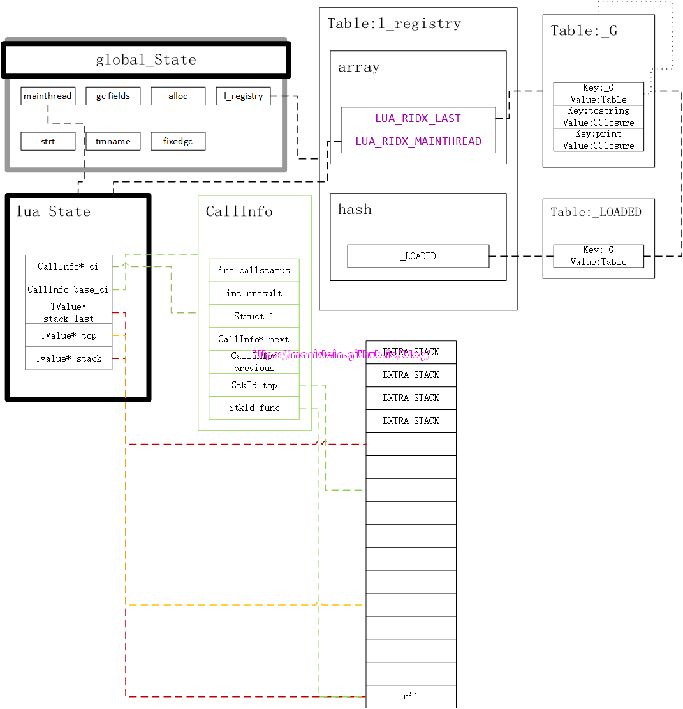
我们可以看到_LOADED表也是在l_registry中的，也就是我们的全局注册表中。
以后我们需要注册新的模块到标准库中的时候，那么我们需要定义一个初始化函数，这个初始化函数，需要创建或获取一个table，并且往该table里注册CClosure函数或者变量，并且为该模块附上一个名称，这个table最终需要压到栈顶，以便luaL_requiref函数能将这个栈顶的table注册到_LOADED中和_G中。本小节讨论的luaL_openlibs函数在common/luaaux.c中，读者可以找他它，阅读它的源码，了解更多的细节。
编译器基础设计与实现
前面我们花费了大量的篇幅，介绍了lua虚拟机的运作流程，我们也知道了，lua解释器要执行一个脚本，首先需要对该脚本进行编译，然后将编译的结果存入一个叫做Proto的结构中，最后交给我们的虚拟机去运行。现在我就来阐述一下编译器相关的内容，由于我并非编译器方面的专家，因此本篇只论述lua涉及到的方面，而不会太深入编译器设计中，常用的设计思想和算法，相信这些知识，读者可以通过《Compilers Principles Techniques and Tools》、《Engineering a Compiler - 2nd Edition - K. Cooper, L. Torczon (Morgan Kaufman, 2012)》等优秀的编译原理相关的书籍中了解到。
编译器简介
现在我们进入到编译器相关的论述中，什么是编译器？《Engineer A Compiler》是这么定义的[6]:
Programming languages are, in general, designed to allow humans to express computations as sequences of operations. Computer processors, hereafter referred to as processors, microprocessors, or machines, are designed to execute sequences of operations. The operations that a processor implements are, for the most part, at a much lower level of abstraction than those specified in a programming language. For example, a programming language typically includes a concise way to print some number to a file. That single programming language statement must be translated into literally hundreds of machine operations before it can execute.
The tool that performs such translations is called a compiler. The compiler takes as input a program written in some language and produces as its output an equivalent program. In the classic notion of a compiler, the output program is expressed in the operations available on some specific processor, often called the target machine
总的来说，我们操作系统中的进程，其实是对处理器也就是CPU的抽象，进程在执行，就是我们的处理器在执行，只是因为要并发处理任务，因此操作系统有了分时系统，因此引入进程的概念更方便于操作系统管理。我们的编程语言，是为了方便人们使用而设计的，人们可以通过高级的编程语言去描述自己想要做的处理。但高级语言是不能被计算机所识别的，为了能够翻译成机器所能识别的指令，需要经过一个软件的处理，这个软件就是编译器。
上面所论述的是我们传统认知的编译器，实际上编译器的概念并不局限于，将高级语言源码编译成目标机器的机器码，只要能将一种语言，翻译成另一种语言形式的工具，我们都可以称之为编译器。实际上有一些编译器，会先将其支持的语言的代码编译成c的代码，然后再通过c的编译器，将其编译成目标机器的机器码，之所以要用这种方式，是因为c是一种被广泛使用和支持的语言，通过这种方式可以极大降低语言的移植成本[7]。图22(图片引自Engineer A Compiler一书)将编译器视作是一个黑盒，并将其工作流程展示出来了
image图22
编译器组成
我们在了解了什么是编译器以后，就需要了解编译器由哪些部分组成，至少在通用的概念上，我们需要做一些区分。从整体上来说，现代编译器并非整体的一个模块，它至少可以分为两个部分，而通常来说，一个能将源码编译成目标机器码的编译器，会包含3个部分，它们分别是编译器前端(front end)，优化器(optimizer)和编译器后端(back end)。
编译器前端，通常包含一个词法分析器(lexer或scanner)和一个语法分析器(parser)，它主要的工作就是，首先把源码中的字符，识别出一个又一个的token，这里的token指的是编译过程中的基本单位，这些token包含一个类别指示和一个值的标识，有些token只有类型标识而没有值得标识，比如我们的print(“hello world”)代码，词法分析器会将它们的token识别出来：1
2
3
4print <TK_NAME, "print">
( <'(', NONE>
"hello world" <TK_STRING, "hello world">
) <')', NONE>
其实我们可以看到，其实词法分析器的作用主要是将源码中，语句的基本单位抽离出来，打上标签，以方便后面要经过的语法分析器，进行语法分析和语义分析，最后将源码编译成一种作为中间表示的数据组织–IR。计算机语言和自然语言最大的区别就是，计算机语言不允许有二义性存在，而自然语言允许二义性，允许模糊的空间，比如我们汉语中就有很多有二义性含义的语句存在，事实上这种二义性也满足了我们的日常交际需要，但计算机语言不允许二义性，它必须是明确的，简洁的。计算机语言中，有一些有限的规则，这些有限的规则使得我们的语言能够表达各种操作，这些规则的集合就叫做grammar，什么是grammar？举个例子，我们编程语言中有许许多多的范式，比如：1
2
3
4
5
6
7
8
9
10
11
12
13
14
15
16
17
18
19
20
21
22
23
241. 条件语句
if expr then
statments
elseif expr then
statments
else
statments
end
2. 循环语句
while expr then
statments
end
for expr in pairs(expr) do
statments
end
3. 赋值语句
expr1 = expr2
4. 函数调用
expr()
...
以上的范式，实际上是个有限集合，而这个有限集合的统称就叫做grammar，我们的语法分析器，也就是parser做的主要工作，就是将词法分析器中，按顺序读出一个又一个token，并判断当前token符合哪个范式，然后根据这个范式将对应的指令生成另一种数据结构–IR。
编译器的优化器，它的主要作用，就是对编译器前端生成的IR，进行进一步的优化，比如指令合并。优化的目的，是使得编译的结果，在优化后，比优化前运行速度更快，或者占据磁盘的空间更小。
编译器后端，主要的作用，就是将编译器前端编译好的IR，直接转换成目标机器码，只有经过编译器后端，将IR转成机器码，cpu才能识别源码中的操作请求，才能运行起来。
现在我来介绍一下IR的概念，所谓的IR就是Intermediate Represent，在《Engineer A Compiler》中的解释是：
A compiler uses some set of data structures to represent the code that it processes. That form is called an intermediate representation, or IR.
简单的来说，它是源码经过编译器处理以后，用于存放编译结果的数据结构，它本质是一种中间表示。IR的作用很大，实际上它可以充当编译器前端和编译器后端解耦的桥梁。如果我们保持统一的IR，那么我们不同的语言，只要编译器前端能够生成相同的IR，而针对某目标平台的编译器后端是将这种IR转换成目标机器的机器码的话，这个编译器后端就能被多种语言的编译器前端所复用，那么我们开发新的语言就不需要自己再去实现该目标平台的编译器后端了。同样的，由于IR是统一的，那么我们同一门语言，编译生成的IR也能够被多种平台的编译器后端，直接编译成机器码，那么，只要这门语言的编译器前端能够生成这种IR，它同样可以直接使用这些编译器的后端。
经过前面几个段落的论述，我们大致知道了编译器的组成，其运作流程如下图所示(图片引自Engineer A Compiler一书)：
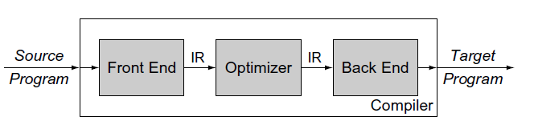
编译器和解释器的区别
上一小节我已经大致介绍了编译器的概念，和编译器的大致组成，现在我们必须还有一个概念需要捋清楚，那便是编译器和解释器的区别。首先我们知道了，编译器的功能，就是将一种代码转化成另一种代码，但是转换的过程并不执行逻辑，而是编译好以后，存在磁盘里，将来要用到时再加载到内存进行执行。
我们的解释器则有所不同，解释器的概念就是，加载我们要转化的源码后，直接编译，然后立刻执行，而不会将编译的结果存在磁盘里，它会输出源码里的操作结果。其运作流程如图24所示(图片引自Engineer A Compiler一书)：
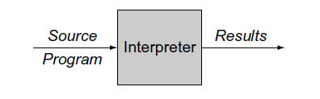
通过上面的论述，我们不难发现，lua就是个典型的解释器，因为它在加载脚本的同时，能够立刻输出结果。但是我们也应该看到，lua内部的lexer和parser，实际上是将脚本源码，先编译成一个proto结构，然后再放到虚拟机里执行，根据前文对IR的论述，实际上，这个proto结构就是我们所说的IR。实际上《Engineer A Compiler》一书中，还有这么一句话：
Finally, compilers are being invoked at runtime to generate customized code that capitalizes on facts that cannot be known any earlier. If the compilation time can be kept small and the benefits are large, this strategy can produce noticeable improvements. the
实际上编译器是可以在运行时被激活使用的，而我们的lua中的lexer和parser实际上又是编译器前端的重要组成部分，因此dummylua将lexer和parser归结为compiler模块是合理的。后面在本文中所说的编译器，实际上就是指代lua的lexer和parser两个模块，而后续我要论述的正是这两个模块。optimizer和back end的设计与实现，完全超出了本系列的范畴，因此这里不会去过度延伸，读者如果有兴趣，可以找对应的书籍去了解。
前面我们对解释器进行了解释和说明，这里补充一个知识点，就是virtual machine的实质定义，事实上这里的virtual machine，实际上指的对处理器的抽象，它接受的是编译器编好的IR，然后转成处理器能够识别的指令。在《Engineer A Compiler》一书中，其对vm的解释如下所示：
Virtual machine
A virtual machine is a simulator for some processor. It is an interpreter for that machine’s instruction set.
虚拟机是一些处理器(CPU)的模拟器，它是机器指令集的解释器。按这种标准来划分，实际上将lua分的更细一些，其虚拟机部分就是解释器，而lexer和parser是编译器，按这种方式来划分其实也是说的通的。
本章后续部分，将会集中探讨lua的编译器部分，lexer和parser。
EBNF范式
任何一种编程语言，都需要通过一组规则作为有限集合，组成它的语法(grammar)，而我们需要通过某种方式来组成这种语法，EBNF范式就是其中一种。EBNF是通过数学的方式来描述我们的编程语言语法的，但它的描述范围不局限于编程领域。一般来说，EBNF范式由以下部分组成[8]：
- terminal符号的集合
- nonterminal符号的集合
- production的集合
接下来我将对以上三组概念进行解释和说明。terminal是指语句中，不能被继续拆解的基本单位，一般来说，我们的terminal就是指token。nonterminal是由一组terminal按一定规则组合而成的。而我们的production又是由一组nonterminal和/或terminal按照一定的规则组合而成。接下来，我们通过一个示例来感受一下，EBNF范式的规则。
现在假设我们要设计一种语言，这种语言就是将数值(整数和小数)，通过EBNF范式表达出来，也就是说我们通过EBNF来描述数值的语法，于是我们得到以下的内容：1
2
3
4S ::= '-' FN | FN
FN ::= DL | DL '.' DL
DL ::= {D}
D ::= '0' | '1' | '2' | '3' | '4' | '5' | '6' | '7' | '8' | '9'
上面所示的代码中，::=表示定义，左边的符号可以被右边的符号所替换。|符号表示或的意思，也就是说左边的符号，可以通过|符号左边或者右边的符号来代替。被”包起来的字符，就是我们实际会显示的字符。被{}包起来的，表示它可以重复0次或者多次。上面的代码，’0’~‘9’已经是最基本的单位了，它不能够被进一步分解，所以他们是terminal，而::=左边的符号，均是nonterminal，每一行定义，就是我们所说的production。通过上述的方式，我们可以用其表示任意的负数、0和正数。现在我们来将3.14代入这个范式，则有：1
2
3
4
5
6
7S ::= FN 没有'-'，因此选择FN分支
S ::= DL . DL 因为带有'.'，所以选择DL '.' DL分支
S ::= D . DL 因为整数位只有一个字符，因此选择D分支
S ::= 3.DL 替换整数位的值
S ::= 3.D D 因为小数位是两个字符，因此小数位转换为D D
S ::= 3.1 D 替换小数位十分位
S ::= 3.14 替换小数位百分位，全部替换完毕，且每个被分解的最小单位都合法，因此解析成功
如果一个语句，如果能够通过范式，完整替换解析的话，那么我们就称这个语句是语法合法的(well form)，在上面的例子中，能够被完整解析的语句，就是一个货真价实的数值，否则就应当抛出编译错误，比如我们的U.14，因为整数位不是定义terminal中的任何一个，因此此时需要抛出syntax error的错误。1
2
3
4
5
6
7S ::= FN 没有'-'，因此选择FN分支
S ::= DL . DL 因为带有'.'，所以选择DL '.' DL分支
S ::= D . DL 因为整数位只有一个字符，因此选择D分支
S ::= U.DL 替换整数位的值
S ::= U.D D 因为小数位是两个字符，因此小数位转换为D D
S ::= U.1 D 替换小数位十分位
S ::= U.14 替换小数位百分位，全部替换完毕，因为整数位不是合法的terminal，因此解析失败，语句不合法
因为无法通过解析，因此U.14就不属于我们定义的数值语言。
Lua的EBNF范式
在介绍完EBNF范式以后，我们现在来看一下Lua语言，完整的范式规则[9]：
1 | chunk ::= {stat [`;´]} [laststat[`;´]] |
上面所涉及的多数符号，前面已经介绍过，这里对[]符号进行补充，包含在[]内的内容，表示可以被省略或者只出现一次。虽然dummylua模仿的对象是lua53，但是从语法层面的发展历史来看，51和53的语法并没有太多的变化，因此我将遵循上面的范式，逐步丰富dummylua。我最终的目标，也是将上述描述的规则完全实现。
本章要实现的范式
虽然上一节贴出了lua完整的语法，但是本章节要设计与实现的部分，也只是函数调用那一部分，并且不支持任何形式的赋值语句。我们前面也介绍过，我们的一个要被编译和解析的脚本既是一个chunk，而图1中的代码，正是该chunk中，需要被编译的那一部分，也就是我们现在只需要支持类似print(“hello world”)这种形式的函数调用即可，于是我们的EBNF范式可以如下所示：1
2
3
4
5
6
7
8
9chunk ::= { stat }
stat ::= functioncall
functioncall ::= prefixexp args
prefixexp ::= var
var ::= Name
args ::= '(' [explist] ')'
explist ::= {exp ','} exp
exp ::= nil | false | true | Number | String
上述范式集合，表达了我们这次要支持的句式和语法。这里需要提醒的是，{}里的stat，是可以没有或者有多个的。而::=符号右边的Name和nil、false、true、Number、String则是terminal。现在我们将图1中的代码print(“hello world”)带入该范式，看看它是怎么运作的：1
2
3
4
5
6
7
8
9
10
11
12chunk ::= stat 由于chunk中只有一个stat，所以右边替换为stat
chunk ::= functioncall 由于stat只有一个nonterminal可以替换，因此将其替换为functioncall
chunk ::= prefixexp args 由于当前的functioncall中只有一个选项，且输入语句符合这个选项，
因此选择了prefixexp args来替换
chunk ::= var args 将prefixexp替换为var
chunk ::= Name args
chunk ::= print args print属于Name这个terminal这个类别，将print替换Name
chunk ::= print '(' [explist] ')'
chunk ::= print '(' explist ')' 因为参数表有参数，因此选择explist
chunk ::= print '(' exp ')'
chunk ::= print '(' String ')' 所有项均替换为terminal，并且均符合定义，所以解析通过
chunk ::= print '(' "hello world" ')' 将"helloworld"字符串替换String
上图展示了图1的脚本，完整的语法解析流程，因为脚本里的代码，能够通过我们当前EBNF范式的解析，因此它是语法合法的，如果一个语句通过语法解析，但是被调用的函数并不存在，那么在lua中，它只能在运行时抛出错误。但如果一个语句不符合范式规定的规范，那么我们就会抛出编译时报错，提醒脚本编写者。
刚才展示的流程和范式，就是本章节我最终会实现的部分，我在后续的章节中，会以此为蓝本，逐步丰富这个范式，直至和上一节中贴出的范式重合为止。
词法分析器设计与实现
通过上面的EBNF范式的解析流程，我们可以知道，要使用Parser对源码里的语句，进行语法解析，我们就必须要首先识别源码中的terminal，上文也有对terminal进行简要的说明，不过我们现在还没真正搞清楚，lua语言中的terminal到底是什么？其实terminal本质就是token，这个问题其实相当于在问token到底是什么。前面我也说过，token的本质就是一门语言中，最基本的单位，例如前面的S::=FN的例子中，它的token集合就是’0’~‘9’。不同的语言，对token的定义也略有不同，但是却有相通的属性。现在，我通过一张表来列举lua的最基本的元素，也就是我们的token集合：1
2
3
4
5
6
7
8
9
10
11
12
13
14
15
16
17
18
19
20
21
22
23
24
25
26
27
28
29
30
31
32
33
34
35
36
37
38token id token name token value description
-1 EOS - 表示源代码已经读完了，代表应该停止继续解析该脚本
40 ’(’ - 一般作为函数参数表的左限定符
41 ’)’ - 一般作为函数参数表的右限定符
42 ‘*’ - 表示运算符乘，id为其ASCII值
43 ’+’ - 表示算数运算符+，id为其ASCII值
45 ’-’ - 表示算数运算-，也表示符号，id为其ASCII值
60 ‘<’ - 表示小于
61 ’=’ - 表示赋值运算
62 ’>’ - 表示大于
91 ‘[’ - 一般用于表示访问table时，key的左限定符
92 ’]’ - 一般用于表示访问table时，key的右限定符
123 ’{’ - 作为table body的开始标志
124 ’}’ - 作为table body的结束标志
126 ‘~’ - 表示运算符非，或者是按位取反操作，id为其ASCII值
257 TK_LOCAL “local” 表示系统保留字”local”
258 TK_NIL “nil” 表示系统保留字”nil”
259 TK_TRUE “true” 表示系统保留字”true”
260 TK_FALSE “false” 表示系统保留字”false”
261 TK_END “end” 表示系统保留字”end”
262 TK_THEN “then” 表示系统保留字”then”
263 TK_IF “if” 表示系统保留字”if”
264 TK_ELSEIF “elseif” 表示系统保留字”elseif”
265 TK_FUNCTION “function” 表示系统保留字”function”
266 TK_STRING 字符串的值，比如”xxxx” 通过”“或”包起来的内容，则是字符串
267 TK_NAME 表示变量名的字符串 表示变量名
268 TK_FLOAT 浮点数值 表示浮点数
269 TK_INT 整数值 表示整数值
270 TK_NOTEQUAL - 表示~=比较运算，id为其枚举值
271 TK_EQUAL - 表示==运算
272 TK_GREATEREQUAL - 表示>=运算
273 TK_LESSEQUAL - 表示<=运算
274 TK_SHL - 表示<<运算，这是左移运算
275 TK_SHR - 表示>>运算，这是右移运算
276 TK_MOD - 表示’%‘运算，即取模运算
277 TK_DOT - 表示’.‘运算符，id为其枚举值
278 TK_VARARG - 表示’…‘运算符，这个运算符一般用在参数列表中，表示参数可以是任意个
279 TK_CONCAT - 表示’..‘运算符，该运算符表示连接运算符，一般是用于连接两个字符串用的
上面所示的TOKEN集合，是dummylua目前已经定义好的集合，并非官方lua的token集合，而且该集合也只是一个临时版本，后续持续的拓展可能会改变上面的一些内容，比如token的id值可能会有所调整，这里展示出来的目的，是为了让大家对token集合有一个清晰的认识。同时我们也会注意到，上述的token集合中，有些有值，有些没有值，这是由于有些token表达的内容比较单一，比如它就是一个操作符，因此不需要填内容，而有些token表达的内容比较丰富，比如TK_STRING这种，我们既要知道它是一个string，也需要知道它的内容，因此我们需要一个变量来存放这个token的值。
接下来我们来看看token的数据结构。1
2
3
4
5
6
7
8
9
10
11// lualexer.h
typedef union Seminfo {
lua_Number r;
lua_Integer i;
TString* s;
} Seminfo;
typedef struct Token {
int token; // token enum value
Seminfo seminfo; // token info
} Token;
我们看到token的结构其实很简单，首先它有一个标记其id的token变量，后面的Seminfo结构，则是存储含有值的token的值。这个Seminfo结构，是一个union结构，也就是说token的值是整数、浮点数或者字符串中的一种，从前面我们列举的表格，我们也可以看到，token的值的类型，也大致是这三个类型。接下来的问题则是，我们如何在源码里识别并获取一个又一个的token呢？对于这个问题，dummylua中获取token的api如下所示：
// lualexer.h
int luaX_next(struct lua_State L, LexState ls);
这个api能够将，我们源码中的下一个token识别出来，并且将其存放在LexState类型的结构中，对于LexState这个数据结构，其定义如下所示：1
2
3
4
5
6
7
8
9
10
11
12
13
14
15
16// lualexer.h
typedef struct LexState {
Zio* zio; // zio实例，会从源码文件中，读取一定数量的字符，以供lexer使用
int current; // 当前读出来的那个字符的ASCII码
struct MBuffer* buff; // 当当前的token被识别为TK_FLOAT、TK_INT、TK_NAME或者TK_STRING类型时，
// 这个buff会临时存放被读出来的字符，等token识别完毕后，在赋值到Token
// 结构的seminfo变量中
Token t; // 通过luaX_next读出来的token
int linenumber; // 当前处理到哪一行
struct Dyndata* dyd; // 语法分析器里要用到的结构
struct FuncState* fs; // 语法分析器使用的重要数据结构
lua_State* L;
TString* source; // 被解析的源文件名称和路径
TString* env; // 就是"_ENV"的TSting表示
struct Table* h; // 在编译源文件时，常量会临时存放在这里，提升检索效率，也就是提升编译效率
} LexState;
我们可以看到，通过luaX_next接口读出来的token，会被存放在LexState结构的t变量里，以供语法分析器Parser晚些时候使用。词法分析器在进行解析时，一次只会取出一个字符，然后再进行处理，而取字符则需要从文件里读取，这部分读取的操作，正是通过Zio模块来执行，Zio的数据结构如下所示：1
2
3
4
5
6
7
8
9
10
11
12
13
14
15
16// luazio.h
typedef char* (*lua_Reader)(struct lua_State* L, void* data, size_t* size);
typedef struct LoadF {
FILE* f; // 被打开的源码文件句柄
char buff[BUFSIZE]; // Zio每次会从文件中读取BUFSIZE个字符，并存在buff数组中
int n; // n表示被读入buff数组中的字符有多少个
} LoadF;
typedef struct Zio {
lua_Reader reader; // 执行从文件中读取字符，并村妇LoadF的buff中的执行函数，由外部指定
int n; // 还有多少个未被处理的字符，初始值是LoadF的n值
char* p; // 指向LoadF结构的buff数组的指针，每处理一个字符，它会自增
void* data; // LoadF结构实例的指针
struct lua_State* L;
} Zio;
现在我们来看一下首次调用luaX_next的执行流程：
- Zio模块，通过外部指定的read函数，从源文件中读取BUFSIZE个字符，并存入LoadF结构的buff中，它的n值记录了读取了多少个字符
- Zio的p指针，指向LoadF的buff数组，并且将LoadF中的n值赋值给zio->n
- 将*p赋值给lexstate->current，然后zio->p++，然后zio->n–，当zio->n小于等于0时，在下一次调用luaX_next函数时，Zio模块会重新从文件中读取新的BUFSIZE个字符，重置LoadF结构的buff数组，重置n，zio->p和zio->n
- 接下来luaX_next会判断lexstate->current的值，与最上面的token集合表中的哪个token匹配，如果是没有token value的token，那么直接将lexstate->current的值赋值给lexstate->t.token，或者从token的枚举值中，找到一个与之匹配的token id赋值给lexstate->t.token；如果被匹配到的token是有token value值的token，那么需要判定它的类型，是TK_FLOAT、TK_INT、TK_NAME还是TK_STRING的一种，除了要给lexstate->t.token赋值正确的token id外，还需要将对应的值读取，然后赋值到lexstate->t.seminfo中。
当我们的词法分析器，读取一个字符后，判定其类型时TK_FLOAT、TK_INT、TK_NAME或TK_STRING的一种时，它会从Zio模块中，连续读取字符，并暂存在LexState结构的Buffer数组中，直到下一个字符与其类型规定的规则不符合为止，于是我们就可以将暂存起来的字符数据，转换成对应类型的变量。不同的类型，也会有不同的匹配方式，现在我们通过一张表来看看他们的匹配规则，我们使用正则表达式[10]来表达这一点。1
2
3
4
5
6token name regular expression description
TK_FLOAT [0-9]*.[0-9]+ 整数位0个或者多个在[0~9]范围内的值，小数位1个或多个[0~9]范围内的值
TK_INT [0-9]+ 数位值是1个或者多个，在[0~9]范围内的值
TK_NAME ( _*[Aa-Zz]+)(( _ * [Aa-Zz]*)( _ * [0-9]*)) * _* 必须以_或者字母开头，该类型token的值，只能
包含字母或者数字以及下划线
TK_STRING \”[\s\S]\” [\s\S]表示任意字符，\s表示空白字符，\S表示非空白字符，组合在一起就表示任意字符
符合上面规则的连续字符，会被合并在一起，成为该token的值，它开始于第一个匹配的字符，结束于第一个不匹配的字符。现在我们来看一下luaX_next函数的实现：1
2
3
4
5
6
7
8
9
10
11
12
13
14
15
16
17
18
19
20
21
22
23
24
25
26
27
28
29
30
31
32
33
34
35
36
37
38
39
40
41
42
43
44
45
46
47
48
49
50
51
52
53
54
55
56
57
58
59
60
61
62
63
64
65
66
67
68
69
70
71
72
73
74
75
76
77
78
79
80
81
82
83
84
85
86
87
88
89
90
91
92
93
94
95
96
97
98
99
100
101
102
103
104
105
106
107
108
109
110
111
112
113
114
115
116
117
118
119
120
121
122
123
124
125
126
127
128
129
130
131
132
133
134
135
136
137
138
139
140
141
142
143
144
145
146
147
148
149
150
151
152
153
154
155
156
157
158
159
160
161
162
163
164
165
166
167
168
169
170
171
172
173
174
175
176
177
178
179
180
181
182
183
184
185
186
187// lualexer.c
int luaX_next(struct lua_State* L, LexState* ls) {
ls->t.token = llex(ls, &ls->t.seminfo);
return ls->t.token;
}
static int llex(LexState* ls, Seminfo* seminfo) {
for (;;) {
luaZ_resetbuffer(ls); // 清空ls->buffer的缓存
switch (ls->current)
{
// new line
case '\n': case '\r': {
inclinenumber(ls);
} break;
// skip spaces
case ' ': case '\t': case '\v': {
next(ls); // 将下一个字符，存入ls->current
} break;
case '-': {
next(ls);
// this line is comment
if (ls->current == '-') {
while (!currIsNewLine(ls) && ls->current != EOF)
next(ls);
}
else {
return '-';
}
} break;
case EOF:{
next(ls);
return TK_EOS;
}
case '+': {
next(ls);
return '+';
}
case '*': {
next(ls);
return '*';
}
case '/': {
next(ls);
return '/';
}
case '~': {
next(ls);
// not equal
if (ls->current == '=') {
next(ls);
return TK_NOTEQUAL;
}
else {
return '~';
}
}
case '%': {
next(ls);
return TK_MOD;
}
case '.': {
next(ls);
if (isdigit(ls->current)) {
return str2number(ls, true);
}
else if (ls->current == '.') {
next(ls);
// the '...' means vararg
if (ls->current == '.') {
next(ls);
return TK_VARARG;
}
// the '..' means concat
else {
return TK_CONCAT;
}
}
else {
return TK_DOT;
}
}
case '"': case '\'': { // process string
// 将读出的字符串，存入ls->t.seminfo中
return read_string(ls, ls->current, &ls->t.seminfo);
}
case '(': {
next(ls);
return '(';
}
case ')': {
next(ls);
return ')';
}
case '[': {
next(ls);
return '[';
}
case ']': {
next(ls);
return ']';
}
case '{': {
next(ls);
return '{';
}
case '}': {
next(ls);
return '}';
}
case '>': {
next(ls);
if (ls->current == '=') {
next(ls);
return TK_GREATEREQUAL;
}
else if (ls->current == '>') {
next(ls);
return TK_SHR;
}
else {
return '>';
}
}
case '<':{
next(ls);
if (ls->current == '=') {
next(ls);
return TK_LESSEQUAL;
}
else if (ls->current == '<')
{
next(ls);
return TK_SHL;
}
else {
return '<';
}
}
case '=': {
next(ls);
if (ls->current == '=') {
next(ls);
return TK_EQUAL;
}
else {
return '=';
}
}
case ',': {
next(ls);
return ',';
}
case '0': case '1': case '2': case '3': case '4':
case '5': case '6': case '7': case '8': case '9': {
return str2number(ls, false);
}
default: {
// TK_NAME or reserved name
if (isalpha(ls->current) || ls->current == '_') {
while (isalpha(ls->current) || ls->current == '_') {
//将当前值存入ls->buffer中，并将下一个字符存入ls->current
save_and_next(ls->L, ls, ls->current);
}
save(ls->L, ls, '\0');
TString* s = luaS_newlstr(ls->L, ls->buff->buffer, strlen(ls->buff->buffer));
if (s->extra > 0) {
return s->extra;
}
else {
ls->t.seminfo.s = s;
return TK_NAME;
}
}
else { // single char
int c = ls->current;
next(ls);
return c;
}
}
}
}
return TK_EOS;
}
上面代码中，关键的部位，已经标上注释了。
这里还需要注意的一点是，上面代码的default分支，我们在识别一个字符串以后，还需要判断一下它是否系统保留字，TString字符串中的extra字段>0的就是系统保留字，这个extra的值就是该系统保留字的token id。所有的系统保留字都是短字符串，我们在Part3提到过，所有的短字符串都会被内部化，并且暂存在一个strt表中，lexer模块在初始化的时候，就会注册这些系统保留字了，其逻辑如下所示：1
2
3
4
5
6
7
8
9
10
11
12
13
14
15
16
17// lualexer.c
// the sequence must be the same as enum RESERVED
const char* luaX_tokens[] = {
"local", "nil", "true", "false", "end", "then", "if", "elseif", "function"
};
void luaX_init(struct lua_State* L)
{
TString* env = luaS_newliteral(L, LUA_ENV);
luaC_fix(L, obj2gco(env));
for (int i = 0; i < NUM_RESERVED; i++) {
TString* reserved = luaS_newliteral(L, luaX_tokens[i]);
luaC_fix(L, obj2gco(reserved));
reserved->extra = i + FIRST_REVERSED;
}
}
接下来，我们以图1中的脚本代码为例子，来说明一下luaX_next的运作流程，其流程，我们可以简化为下面所示的伪代码：1
2
3
4
5
6
7
8
9
10
11
12
13
14
15
16
17
18
19
20
21// 第一次调用luaX_next，第一个字符匹配到，它是一个TK_NAME类型的token
// 并且连续从Zio模块读取字符，直至第一个字符'('，不能匹配TK_NAME的规则
// 此时将已经暂存的print生成字符串，赋值给ls->t.seminfo.s上
<TK_NAME, "print"> = luaX_next()
// 第二次调用luaX_next
<'(', None> = luaX_next()
// 第三次调用luaX_next，因为ls->current是"字符，因此判定该token是TK_STRING，
// 将"后的字符全部读出，并暂存在ls->buffer中，当ls->current匹配到另一个"时，
// 表示字符串已经完整读完，因此此时可以为其创建一个新的token，并将值赋给
// ls->t.seminfo.s上
<TK_STRING, "hello world"> = luaX_next()
// 第四次调用luax_next
<')', None> = luaX_next()
// 第五次调用luaX_next
<TK_EOS, None> = luaX_next()
// 调用结束
现在将对Zio模块进行特别说明，我们前面已经说过LexState结构实例ls里，ls->current的值，是从Zio模块中获取的，而Zio模块又是将源码中的字符，读取BUFSIZE个到它的buff数组中，然后一个一个给ls->current，直到给完，再从文件中重新加载，之所以这样做的原因是，如果源文件很大，那么加载的过程将会很长，而我们常常又不可能，一次性就将代码写对，因此总会遇到一些词法上甚至是语法上的错误，因此如果每次加载编译，就直接读取完整的源文件，那么将会极大降低我们的调试效率，而每次又直接从文件里读取一个字符的速度又太慢，因此加多一个Zio缓冲模块，能够极大缓解这个问题。
到这里为止，对于词法分析器的设计论述就完成了，关于代码实现，读者可以到compiler/luazio.h、compiler/luazio.c、compiler/lualexer.h和compiler/lualexer.c中查看源码。我相信只看这篇文章的论述是不够的，因此我希望读者能够深入源码去理解具体的实现方式，文章是勾勒出轮廓，而细节需要读者自己去探索，毕竟篇幅有限，不可能展示所有的细节。而且我已经将不同的部分拆分开来了，把很多无关的逻辑剖离，一步一步实现我们最终想要的解释器，相信读者跟着进度，也能够更加容易得进入研究lua解释器的状态中。
语法分析器基础设计与实现
在完成了词法分析器的论述以后，现在我们开始进入到语法分析器基础的设计和实现上。本章涉及的语法分析器，并不是包含完整的功能，而是对于前面范式所定义的内容进行技术层面的实现。当然，本章的意义也非常重大，工作量并不意味着比后续的内容小，因为这是要搭建语法分析器最基础的框架，因此在构思上花费的时间甚至可能会更多。本节首先会从EBNF范式出发，讨论dummylua语法分析器的整体逻辑架构，然后再逐步深入各个细节。我们最终的目的也很清晰，就是能够编译并运行图1所示的脚本代码print(“hello world”)。
回顾一下图2所示的代码，我们的脚本加载和编译的流程，都是在luaL_loadfile函数里进行的，因此我们Parser的运作流程，也是在这里面执行的，实际上，编译流程的入口函数，是一个叫做luaY_parser的函数，其函数声明如下所示：1
2// luaparser.h
LClosure* luaY_parser(struct lua_State* L, Zio* zio, MBuffer* buffer, Dyndata* dyd, const char* name)
我们先不深入里面的代码实现细节，只是为了告诉大家，我们编译在代码层面是从什么地方开始的。前面也提到过，我们在调用luaL_loadfile函数的时候，首先会创建一个LClosure结构的函数实例，并压入栈中，然后加载脚本并编译，最后将编译的结果放入LClosure结构的Proto结构里。我们本节的目标就是探讨这个编译流程。
我们要被编译加载的脚本，可以被视作是一个chunk，因此它将被作为我们的研究起点，回顾一下官方lua的EBNF范式，对chunk的有关定义：1
chunk ::= {stat [`;´]} [laststat[`;´]]
上面的production中，chunk由右边的nonterminal来定义。{}内的内容，表示会出现0次或者多次，而[]内的内容表示会出现0次或者1次。也就是说chunk是由0个、1个或者多个stat语句组成，可以有laststat和’;‘，也可以没有这两个。laststat的定义如下所示：1
laststat ::= return [explist1] | break
前面我们也已经定义过本章节要实现的EBNF范式规则，laststat并没有被纳入，因此本章不会讨论laststat相关的内容，为了简化问题，我也将’;‘忽略，也就是说我们现在要关注的起点是：1
chunk ::= {stat}
我们运行脚本是由stat组合而成，stat是statement的简写，它是我们构建命令的最基本的单位，官方lua对stat的定义如下所示：1
2
3
4
5
6
7
8
9
10
11stat ::= varlist1 `=´ explist1 |
functioncall |
do block end |
while exp do block end |
repeat block until exp |
if exp then block {elseif exp then block} [else block] end |
for Name `=´ exp `,´ exp [`,´ exp] do block end |
for namelist in explist1 do block end |
function funcname funcbody |
local function Name funcbody |
local namelist [`=´ explist1]
内容比较丰富，本章并不会对上面所有的分支进行论述，这里只是为了给读者提供一个最基本的概念。实际上官方lua的statement分支，全在lparser.c的statement函数里：1
2
3
4
5
6
7
8
9
10
11
12
13
14
15
16
17
18
19
20
21
22
23
24
25
26
27
28
29
30
31
32
33
34
35
36
37
38
39
40
41
42
43
44
45
46
47
48
49
50
51
52
53
54
55
56
57
58
59
60
61
62
63
64
65
66
67
68// lua-5.3.5 lparser.c
static void statement (LexState *ls) {
int line = ls->linenumber; /* may be needed for error messages */
enterlevel(ls);
switch (ls->t.token) {
case ';': { /* stat -> ';' (empty statement) */
luaX_next(ls); /* skip ';' */
break;
}
case TK_IF: { /* stat -> ifstat */
ifstat(ls, line);
break;
}
case TK_WHILE: { /* stat -> whilestat */
whilestat(ls, line);
break;
}
case TK_DO: { /* stat -> DO block END */
luaX_next(ls); /* skip DO */
block(ls);
check_match(ls, TK_END, TK_DO, line);
break;
}
case TK_FOR: { /* stat -> forstat */
forstat(ls, line);
break;
}
case TK_REPEAT: { /* stat -> repeatstat */
repeatstat(ls, line);
break;
}
case TK_FUNCTION: { /* stat -> funcstat */
funcstat(ls, line);
break;
}
case TK_LOCAL: { /* stat -> localstat */
luaX_next(ls); /* skip LOCAL */
if (testnext(ls, TK_FUNCTION)) /* local function? */
localfunc(ls);
else
localstat(ls);
break;
}
case TK_DBCOLON: { /* stat -> label */
luaX_next(ls); /* skip double colon */
labelstat(ls, str_checkname(ls), line);
break;
}
case TK_RETURN: { /* stat -> retstat */
luaX_next(ls); /* skip RETURN */
retstat(ls);
break;
}
case TK_BREAK: /* stat -> breakstat */
case TK_GOTO: { /* stat -> 'goto' NAME */
gotostat(ls, luaK_jump(ls->fs));
break;
}
default: { /* stat -> func | assignment */
exprstat(ls);
break;
}
}
lua_assert(ls->fs->f->maxstacksize >= ls->fs->freereg &&
ls->fs->freereg >= ls->fs->nactvar);
ls->fs->freereg = ls->fs->nactvar; /* free registers */
leavelevel(ls);
}
我们需要关注的是它的switch语句，里面的case，基本上对应了一个独立的stat函数，这些stat函数分别实现了不同的stat分支，我们可以用图25来表示
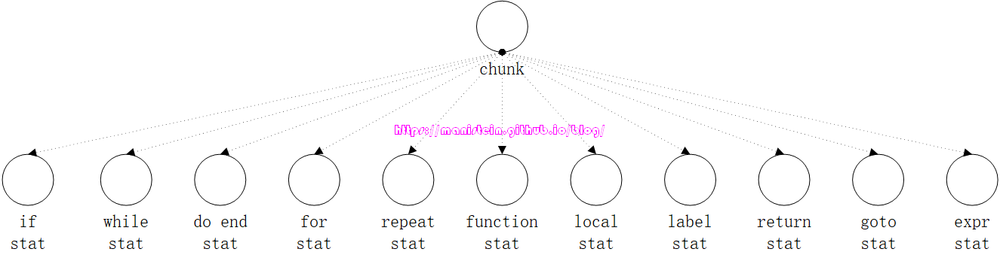
回顾一下上面EBNF有关stat的定义，如果要将里面的nonterminal和图25的stat做对应关系的话，那么将如下表所示：
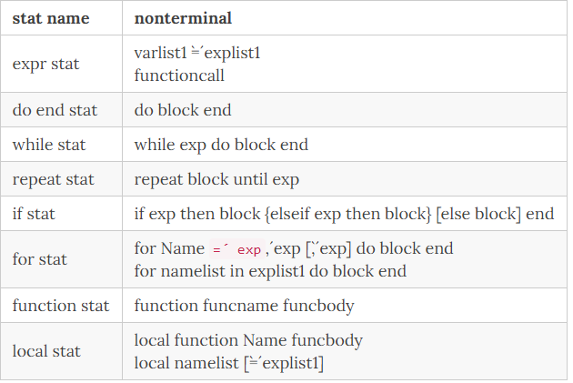
由于我们本章的内容，是为了实现对图1脚本代码的编译和执行，因此就是要实现functioncall的范式描述，我们再次回顾一下上文中，有关我们本文要实现的范式那里，我们的functioncall定义则如下所示：
1 | functioncall ::= prefixexp args |
结合上表，其实我们只需要聚焦exprstat这个分支就可以了，与此同时，我们也忽略了赋值语句部分。
在进一步深入探讨functioncall范式的编译流程实现之前，首先我要向大家介绍一下Parser的几个重要的数据结构，这个数据结构是Parser能够运作的重要基础：1
2
3
4
5
6
7
8
9
10
11
12
13
14// luaparser.h
typedef struct FuncState {
int firstlocal;
struct FuncState* prev;
struct LexState* ls;
Proto* p;
int pc; // Proto结构code数组中，下一个可被写入的位置的下标
int nk; // Proto结构常量数组k中，下一个可被写入的位置的下标
int nups; // Proto结构upvalue数组中，下一个可被写入的位置的下标
int nlocvars; // 标识已经有多少个local变量了
int nactvars; // 活跃变量的数量，一般指local变量
int np; // Proto结构实例中，proto列表p中proto实例的个数
int freereg; // 能够被使用的寄存器位置
} FuncState;
由于我们目前没有涉及local变量、activate变量、upvalue相关的内容，因此这些部分可以暂时被忽略。这个数据结构为什么重要？因为它记录了我们新的常量要被存储在Proto结构中的什么位置，记录了下一个可被使用的寄存器位置，记录了新生成的指令要存放在哪里等。用于记录这些信息的变量，会随着编译流程的持续执行而动态变化。
现在我们来看一下另外一个重要的数据结构，这个数据结构主要是用来临时存放当前表达式信息的。其用途本质就是临时存放一个表达式的类型和信息，Parser在遇到下一个exp的时候，会将存放在这个结构里的上一个表达式，转换成虚拟机指令：1
2
3
4
5
6
7
8
9
10
11
12
13
14
15
16
17
18
19
20
21
22
23
24
25
26
27
28
29
30
31
32
33
34
35// luaparser.h
// 表达式(exp)的类型
typedef enum expkind {
VVOID, // 表达式是空的，也就是void
VNIL, // 表达式是nil类型
VFLT, // 表达式是浮点类型
VINT, // 表达式是整型类型
VTRUE, // 表达式是TRUE
VFALSE, // 表达式是FALSE
VINDEXED, // 表示索引类型，当exp是这种类型时，expdesc的ind域被使用
VCALL, // 表达式是函数调用，expdesc中的info字段，表示的是instruction pc
// 也就是它指向Proto code列表的哪个指令
VLOCAL, // 表达式是local变量，expdesc的info字段，表示该local变量，在栈中的位置
VUPVAL, // 表达式是Upvalue，expdesc的info字段，表示Upvalue数组的索引
VK, // 表达式是常量类型，expdesc的info字段表示，这个常量是常量表k中的哪个值
VRELOCATE, // 表达式可以把结果放到任意的寄存器上，expdesc的info表示的是instruction pc
VNONRELOC, // 表达式已经在某个寄存器上了，expdesc的info字段，表示该寄存器的位置
} expkind;
// exp临时存储结构
typedef struct expdesc {
expkind k; // expkind
union {
int info;
lua_Integer i; // for VINT
lua_Number r; // for VFLT
struct {
int t; // 表示table或者是UpVal的索引
int vt; // 标识上一个字段't'是upvalue(VUPVAL) 还是 table(VLOCAL)
int idx; // 常量表k或者是寄存器的索引，这个索引指向的值就是被取出值得key
// 不论t是Upvalue还是table的索引，它取出的值一般是一个table
} ind;
} u;
} expdesc;
现在我们来举几个简单的例子来看看，这个expdesc的实际用途，下面的伪代码展示了几个使用的例子：1
2
3
4local lv -- lua
expdesc.expkind = VLOCAL
expdesc.info = 0
上面所示的伪代码中，因为lv是第一个local变量，因此它会被安排在栈中的第0个位置，所以根据定义我们的expdesc.info要指向这个位置，并且将lv这个名称存在Proto的localvar列表中，当我们通过lv去查找local变量在哪里时，首先会去Proto的localvar列表中，通过名称去匹配，当找到匹配项时，该匹配项指向的位置，就是该local value所在的位置。现在再来看一个例子：1
2
3
4
5
6
7
8
93.14 -- lua
expdesc.expkind = VFLT
expdesc.u.r = 3.14
10 -- lua
expdesc.expkind = VINT
expdesc.u.i = 10
上面两个例子分别对应浮点数和整数的情况，由于比较简单这里不作额外的解释。我们现在来看一个索引的例子：1
2
3
4
5
6second_upvalue["key"] -- lua
expdesc.expkind = VINDEXED
expdesc.u.idx.t = 1 -- second_upvalue是当前被调用函数的第二个upvalue
expdesc.u.vt = VUPVAL
expdesc.u.idx = 0 -- 假设"key"在常量表的第0个位置
现在来看一个引用全局表的例子：1
2
3
4
5
6
7
8global_table["key"] -- lua
expdesc.expkind = VINDEXED
-- global_table是在_G中，_ENV是每个LClosure的第1个Upvule(索引是0)，而_ENV默认指向_G
-- 所以t是0，指向_ENV
expdesc.u.ind.t = 0
expdesc.u.ind.vt = VUPVAL
expdesc.u.ind.idx = 0 -- 假设"key"在常量表的第0个位置
我们最后来看一个local table引用的例子：1
2
3
4
5
6
7local_table["key"] -- lua
expdesc.expkind = VINDEXED
-- 假设local_table是chunk内第一个local value，因此它在栈中，且索引值为0
expdesc.u.ind.t = 0
expdesc.u.ind.vt = VLOCAL
expdesc.u.ind.idx = 0 -- 假设"key"在常量表第0个位置
上面三个索引的例子，就是VINDEXED类别的全部情况，我们可以看到ind.t指向的，要么是个upvalue，要么是栈的位置，而不管它指向哪里，从那里取出来的值一定是个table类型，所以我们可以通过ind.idx所指向的常量表的值，作为key，并以该key对应的value作为目标值。
介绍完基本的数据结构以后，我们就可以来看一下，我们到底如何处理functioncall的编译流程。图26为我们展示了functioncall的解析逻辑树，我们会陆续从源码中获取token，而这些按顺序获取的token类型，必须和节点里规定的token匹配，否则就要抛出syntax error。
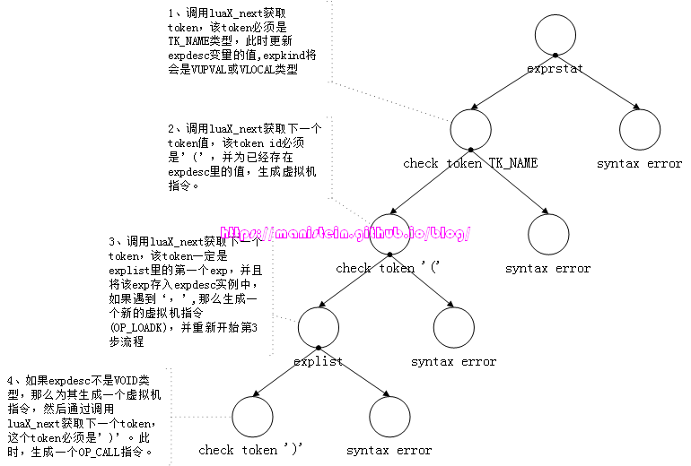
上图的解释比较抽象，现在假设我们的part05_test.lua的逻辑做出如下修改，并且用图2所示的C语言代码对其进行编译和执行，那么则有：
1 | -- part05_test.lua |
当我们开始调用luaL_loadfile函数，这个函数首先会创建一个LClosure结构的实例，并压入栈中，并打开part05_test.lua文件，此时内存布局如图27所示：
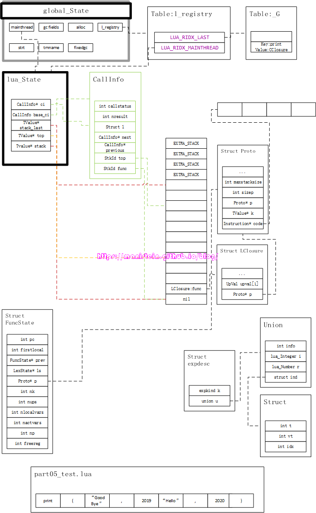
在完成准备工作之后，我们就进入到luaY_parser的函数逻辑里了，此时lexer读取第一个token，”print”，判断得到token的类别为TK_NAME，符合图26中，第一步对token的要求，事实上该步骤是进入到了一个叫做suffixexp的逻辑流程中，所谓的suffixexp是指TK_NAME[TK_NAME]或TK_NAME(explist)这种形式，前者是访问table的某个域，后者就是我们的functioncall调用了，而上面所示的两个表达式中，第一个TK_NAME就是primaryexp，我们现在来看一个实例：
1 | <-------------------suffixexp------------------> |
这个例子中，我们的值为”print”的TK_NAME型token，就是作为primaryexp存在的，因此需要将其填入到expdesc的结构中，目前我们对primaryexp的处理逻辑，是查找print所在的位置，并将对应信息写到expdesc结构上。primaryexp查找TK_NAME这种类型的token，本质就是查找一个变量名，查找变量名的代码如下所示(入口函数是singlevar函数)：1
2
3
4
5
6
7
8
9
10
11
12
13
14
15
16
17
18
19
20
21
22
23
24
25
26
27
28
29
30
31
32
33
34
35
36
37
38
39
40
41
42
43
44
45
46
47
48
49
50
51
52
53
54
55
56
57
58
59
60
61
62
63
64
65
66
67
68
69
70
71
72
73
74
75// luaparser.c
static void init_exp(expdesc* e, expkind k, int i) {
e->k = k;
e->u.info = i;
}
static LocVar* getlocvar(FuncState* fs, int n) {
LexState* ls = fs->ls;
int idx = ls->dyd->actvar.arr[fs->firstlocal + n];
lua_assert(idx < fs->nlocvars);
return &fs->p->locvars[idx];
}
// search local var for current function
static int searchvar(FuncState* fs, TString* name) {
for (int i = fs->nactvars - 1; i >= 0; i--) {
if eqstr(getlocvar(fs, i)->varname, name) {
return i;
}
}
return -1;
}
static int searchupvalues(FuncState* fs, expdesc* e, TString* n) {
Proto* p = fs->p;
for (int i = 0; i < fs->nups; i++) {
if (eqstr(p->upvalues[i].name, n)) {
init_exp(e, VUPVAL, i);
return i;
}
}
return -1;
}
static int singlevaraux(FuncState* fs, expdesc* e, TString* n) {
// can not find n in local variables, try to find it in global
if (fs == NULL) {
init_exp(e, VVOID, 0);
return -1;
}
int reg = searchvar(fs, n);
if (reg >= 0) {
init_exp(e, VLOCAL, reg);
}
else {
// can not find it in local variables, then try upvalues
reg = searchupvalues(fs, e, n);
// try to find in parent function
if (reg < 0) {
singlevaraux(fs->prev, e, n);
if (e->k != VVOID) {
reg = newupvalues(fs, e, n);
init_exp(e, VUPVAL, reg);
}
}
}
return reg;
}
// First, search local variable, if it is not exist, then it will try to search it's upvalues
// if it also not exist, then try to search it in _ENV
static void singlevar(FuncState* fs, expdesc* e, TString* n) {
singlevaraux(fs, e, n);
if (e->k == VVOID) { // variable is in global
expdesc k;
singlevaraux(fs, e, fs->ls->env);
lua_assert(e->k == VUPVAL);
codestring(fs, n, &k);
luaK_indexed(fs, e, &k);
}
}
上面所示的代码，基本遵循一个流程：
1) 查找一个变量，先查找自己的locvar列表，如果找到则生成VLOCAL类型的expdesc，没找到就进入下一步
2) 查找自己的upvalue列表，如果找到，就生成VUPVAL类型的expdesc，没找到就进入下一步
3) 查找父函数的local列表，如果找到同名的变量名，则将该变量注册为自己新的upvalue后，执行第2步，如果没查找到，则进入下一步
4) 查找父函数的upvalue列表，如果找到同名的变量名，则将该变量注册为自己的upvalue后，执行第2步，如果没找到，自己是top level function的话，则执行第5步，否则返回第3步
5) 查找_ENV，如果找到同名的变量名，则将该变量注册为自己的upvalue后，生成VINDEXED类型的expdesc
我们前面讨论到，调用luaL_loadfile函数时，它首先会做一些准备工作，并生成了图27那样的内存布局，然后就要开始调用luaY_parser函数进行编译了，本章编译的整体流程如图26所示，编译的脚本，我们也做出了调整，现在开始执行图26中的第1步，我们从脚本part05_test.lua中，读取第一个token < TK_NAME, “print” >，由于token id符合第1步骤的要求，因此判定其语法合法(否则抛出syntax error)，此时的< TK_NAME, “print” >，是一个primaryexp，我们要去查找”print”在什么位置，并生成合适的expdesc。由于脚本中没有local变量，除了_ENV又没有其他upvalue，而_ENV默认指向_G，因此我们会在全局表_G中查找”print”，于是我们生成了图28的结构了：
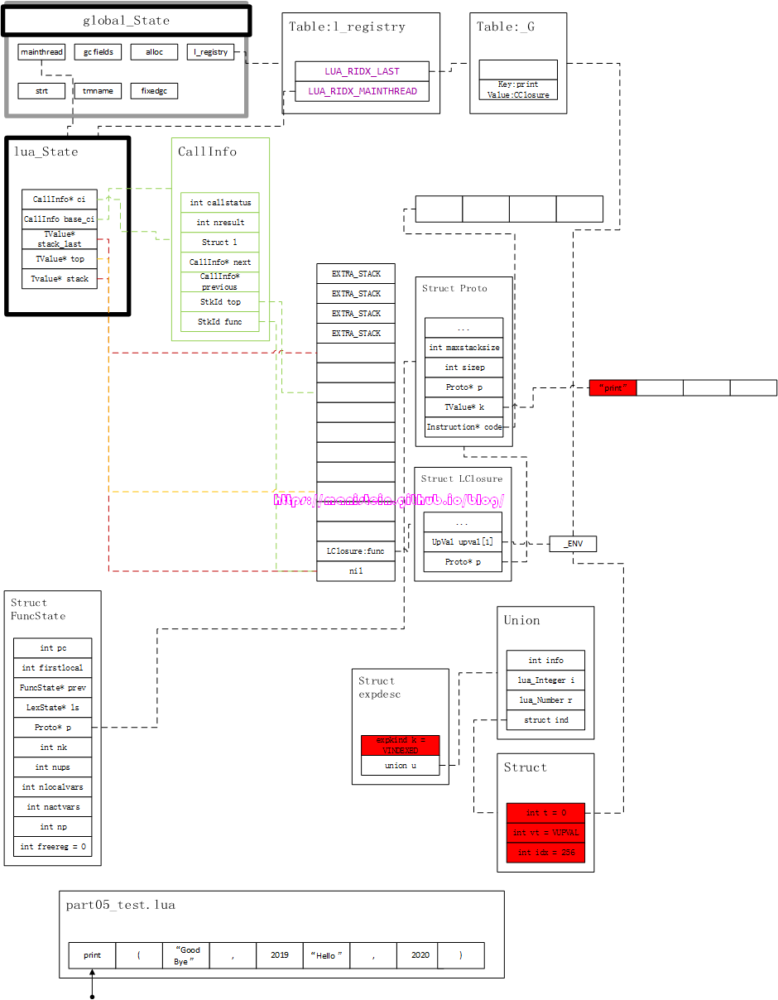
标红的部分，就是这次更新的部分，我们可以看到，“print”被注册到了Proto的常量表k中了，我们所有的常量(包括TK_NAME、TK_STRING、TK_FLOAT、TK_INT等)都会被注册到常量表中，然后我们可以看到，expdesc的kind被设置为了VINDEXED类型，ind.vt被设置为VUPVAL，表示ind.t指向一个UpVal，由于它的值是0，因此它指向了_ENV，然后_ENV默认指向_G，因此这两个组合实质就是表示我们的值要从_G里取得。最后我们观察到ind.idx的值是256，前面我们也已经说过，ind.idx指向一个寄存器(栈上的位置)或者是常量表的某个位置，当ind.idx< 256时，它就是R(ind.idx)，当ind.idx >= 256时，它就是Kst(ind.idx - 256)，在这里它的值是256，因此它就是指Kst(0)，也就是”print”，综合起来看，这个expdesc表达的含义如下所示：
1 | // 因为expkind为 |
expdesc是个非常重要的数据结构，它是临时存储我们表达式的重要变量，而我们在编译的过程中，往往又需要复用这个结构，以节约内存和提升效率。
在完成图26的第一步以后，我们进入到第二个步骤，此时我们读取下一个token < ‘(’, None >, 这个token符合我们第二个步骤的要求，因此它可以继续执行(否则就要报syntax error)，识别了这个token，意味着后续可能会有一个explist，它们同样可能会将自己的信息写入到expdesc结构中，而我们的expdesc结构又是共享的，而且它内部又包含上一个表达式的值了，因此我们此时需要将它消费掉，此时我们需要将expdesc转换成instruction，因此我们得到图29
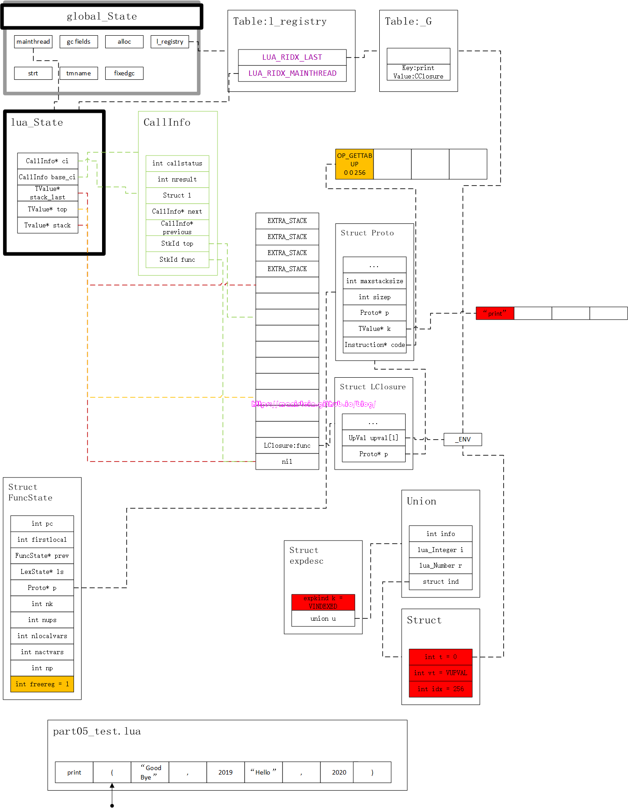
图中橙色的部分，就是本次发生变更的部分，我们已经知道expdesc存放的实质是一个_G[“print”]的表达式，它表达的是把key为”print”的value取出来，那么它将存放到哪里去呢？在FuncState结构的freereg变量更新之前，它是0，这个变量表示的是当前能够被写入的寄存器是哪个，也就是如果有一个表达式要对栈进行写入，那么这个freereg就指明了它可以写入的位置。由于当前expdesc所表达的含义已经非常清晰了，因此将其转换成虚拟机指令，最匹配的则是OP_GETTABUP指令，它表示从upvalue中，取出一个值为table的变量，再从它取出一个key为R( C )的value，于是生成了< OP_GETTABUP 0 0 256 >这个指令(真实的指令是一个经过组合的整数值，这里只是逻辑表示)，其中其A值由FuncState的freereg来指定，其B值由expdesc结构里的ind.t来指定，它的OPCODE由ind.vt(VUPVAL)来决定，它的C值由ind.idx来决定，此时我们就可以清晰地了解到，expdesc、FuncState与生成指令的部分关联了。在完成指令生成以后，FuncState的freereg的值自增1。
完成第二步的逻辑以后，我们接下来进行到图26所示的解析树里的第三步，这里我们将对explist进行解析，所谓explist，就是’(‘和’)‘包起来的通过’,‘隔开的表达式exp的集合。本章前面定义的范式，已经非常清楚了，只要我们的explist里的exp符合以下terminal集合中的其中一个，那么这个exp我们可以认为是合法的：
1 | exp ::= nil | false | true | Number | String |
接下来，我们通过词法分析器的luaX_next函数，来获取下一个token，< TK_STRING, “Good Bye ” >，显而易见，我们的token符合上面的范式，这是一个合法的token，现在我们要填信息到expdesc中了，此时我们需要expdesc去描述这个exp，因为它的值是”Good Bye “，一个字符串类型，因此它需要被注册到常量表k中，同时我们需要指明它是在k中的哪个位置，因此expkind为VK，而expdesc的info则为1：
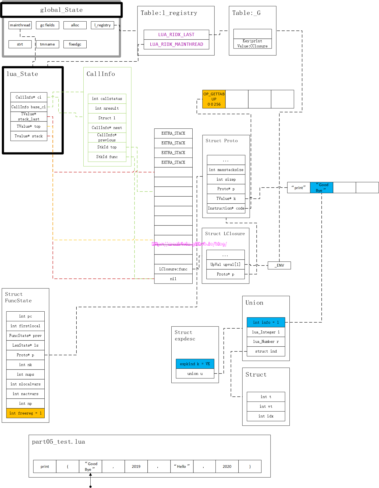
上图的蓝色部分，则表明了更新的信息。随着我们的语法分析器继续运作，我们获得了下一个token，< ‘,’ , None >，在explist中，遇到这个token，意味着前一个被缓存在expdesc中的exp，应当立马被转换为虚拟机指令，与expdesc的VK类型对应的，则是OP_LOADK指令。前面我已经提到过，OP_LOADK的作用是将常量表中的某个值，读到目标寄存器上，这里生成了< OP_LOADK 1 1 >，意思是将常量表中，k[1]的值，放入寄存器中，也就是：
1 | R(A) = Kst(n) |
在虚拟机指令< OP_LOADK 1 1 >中，他的A值是由FuncState的freereg变量指定，而它的B值是由expdesc中的info字段指定，在虚拟机指令生成以后，FuncState的freereg就自增1变成2了(表示前面两个位置已经被占用了)。前面我也说过，真实的虚拟机指令，其实是一个int型变量，我们前面的标记，只是为了方便理解而写的，这也是为什么，虚拟机指令只记录OPCODE以及一些索引参数的原因了。在完成虚拟机指令生成以后，就变成了图31的样子：
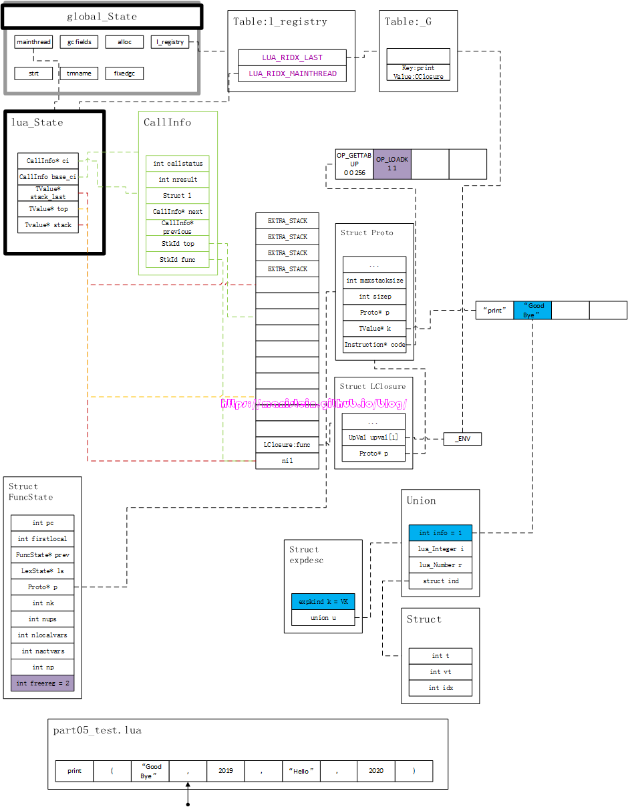
图中淡紫色部分就是更新的部分。同理，接下来的exp操作，与上面的流程类似，我们直接输出图32，这是执行过后的结果。
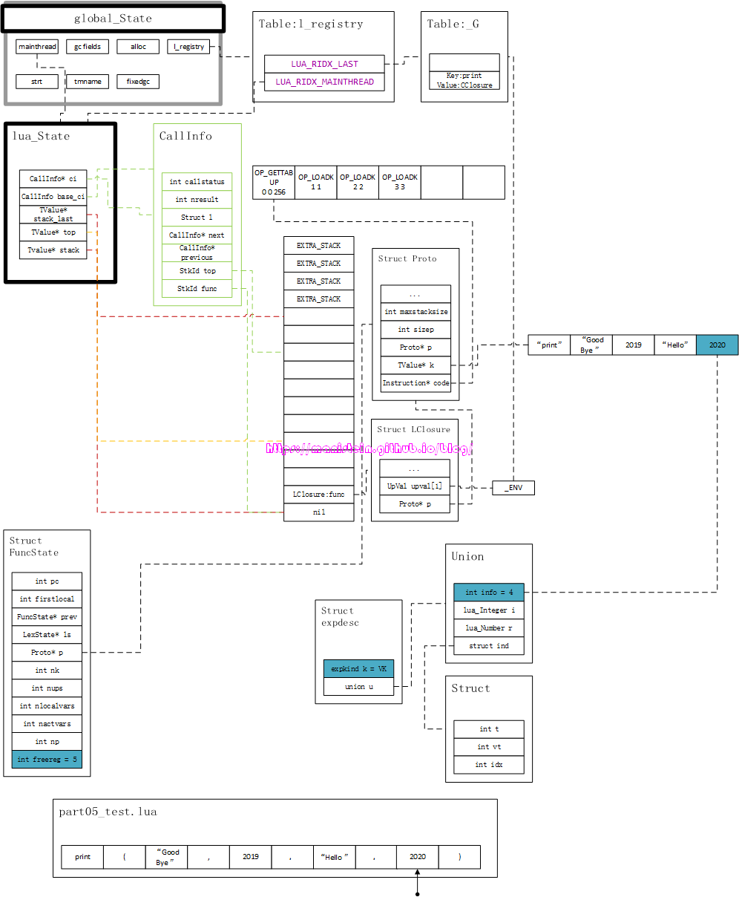
淡紫色的就是发生变更的部分。写到这里，我们图26中的第三个编译步骤就完成了。
现在进入到了第4个编译步骤，我们继续通过词法分析器的luaX_next函数获取最后一个token，< ‘)’ , None >，该token符合第4步对token的要求，因此是合法的(否则抛出syntax error)，遇到这个token，意味着我们的explist已经结束，存在expdesc里的表示获取2020这个值的描述结构，也需要将其转换成虚拟机指令< OP_LOADK 4 4 >，最后functioncall要表达的是调用一个函数，现在函数和参数入栈的指令也已经生成，因此需要生成调用函数的指令OP_CALL, 这个指令需要我们指定，它要调用的函数位于栈的哪个位置，有多少个参数，几个返回值。OP_CALL是iABC模式，其中A是要被调用的函数，在栈中的位置，B是参数的个数+1，C是返回值个数+1，我们可以回顾一下已经生成的指令里，”print”函数是被读到R(0)的位置，也就是栈底的位置，因此A的值就是0，因为我们有4个参数，所以B的值是5，而这个print函数没有返回值，所以C是1，最终得到< OP_CALL 0 5 1 >，我们最终得到图33所示的结果：
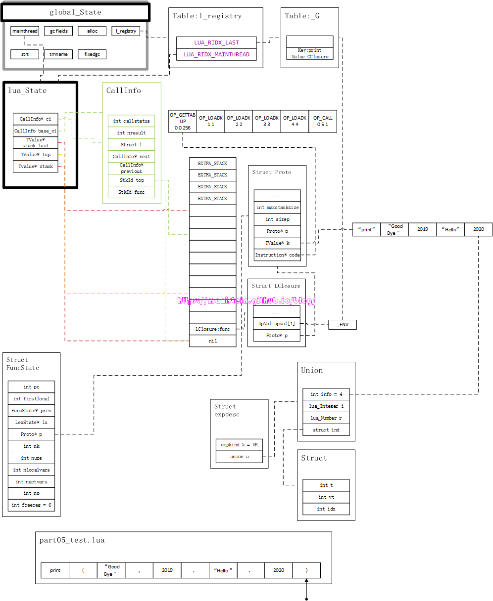
到这里为止，我关于编译本章涉及到的编译器相关的内容就全部介绍完了。在了解流程之后，我还是希望读者能够自己去看看part5的源码，去了解更多的实现细节，文章只是阐述了它的基本数据结构和主要流程，更多的细节无法在有限的篇幅内一一展现，因此只有读者自己深入源码，才能够做到彻底理解和掌握，这里再次贴上dummylua的连接地址：dummylua项目。
结束语
本文开篇介绍了，我们最终要实现的目标，以一个简单的脚本代码作为例子，贯穿了整篇博文。我先介绍了lua解释器的整体运作流程，介绍了lua代码的反编译工具，介绍了lua的虚拟指令集，以及虚拟机的整体运作框架。接着又论述了编译器的概念，EBNF范式，词法分析器和语法分析器。内容比较多，但是希望对大家有所帮助。
经过十几天的浴血奋战，我完成了这篇blog的编写，耗费了大量的时间和精力，我总共投入了不少于100小时到这篇文章中，本篇的重大意义在于，我的dummylua正式进入到编译器和虚拟机相关的部分，真正的挑战开始了，后续我也将继续投入大量的时间，完成剩下的部分。最后，原创不易，希望大家转载的时候注明出处。
Reference
[1] The Lua Architecture 图片位于Lua: An Embedded Script Language这个章节中：Figure 1: process of initializing Lua and loading a script file
[2] Wikipedia Bytecode
[3] LUAC man page
[4] ANoFrillsIntroToLua51VMInstructions 2 Lua Instruction Basics
[5] Programing in Lua:1.1 Chunks
[6] [Engineer A Compiler 1.1 Introduction Overview]
[7] [Engineer A Compiler 1.1 Introduction Overview] Many research compilers produce C programs as their output. Because compilers for C are available on most computers, this makes the target program executable on all those systems, at the cost of an extra compilation for the final target. Compilers that target programming languages rather than the instruction set of a computer are often called source-to-source translators.
[8] Microsoft Word EBNF_m
[9] lua51.EBNF
[10] 正则表达式语法